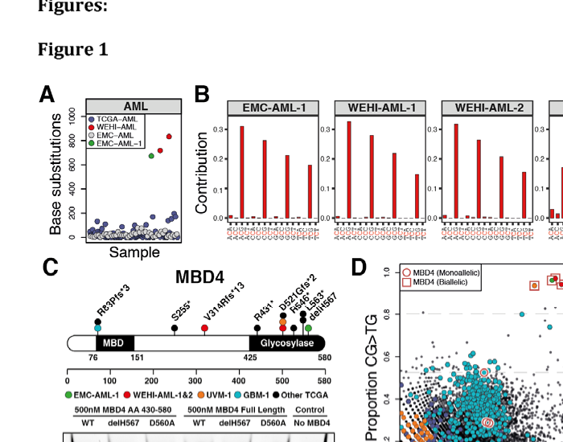

MBD4-related tumor predisposition syndrome (MBD4-TPDS; MBD4-associated neoplasia syndrome, MANS) is an autosomal recessive multi-tumor predisposition caused by biallelic germline loss-of-function variants in MBD4, the base-excision-repair glycosylase that removes thymine from the G:T mismatch left when 5-methylcytosine deaminates at a CpG site. The core phenotype is early-onset gastrointestinal adenomatous polyposis together with myelodysplastic syndrome or acute myeloid leukemia, with schwannoma, colorectal carcinoma, uveal melanoma, meningioma and papillary thyroid carcinoma each reported in more than one biallelic individual. Like MUTYH- and NTHL1-associated polyposis, it is a constitutional mutator state rather than a Knudson two-hit tumor suppressor syndrome: every cell lacks the repair activity from conception, and the tumors that arise carry a CpG>TpG transition excess (a signature close to COSMIC SBS1) that inactivates tissue-appropriate drivers somatically - DNMT3A in the hematopoietic compartment, APC in intestinal epithelium, NF2 in a schwannoma. Onset in the reported cases is in young adulthood rather than childhood: AML has been diagnosed mostly in the third and fourth decades and polyposis from the late teens or twenties, with a single juvenile ovarian granulosa cell tumor at age 12 as the only pediatric neoplasm reported. Fewer than twenty biallelic individuals had been published by 2026, so the tumor spectrum and lifetime risks are not established and the frequency values below describe a small, ascertainment-biased case series. Heterozygous MBD4 carriers have an increased uveal melanoma risk; that dominant susceptibility was split by ClinGen into a separate disease entity and is not curated as part of this entry (see notes).
Ask a research question about MBD4-Related Tumor Predisposition Syndrome. OpenScientist will conduct autonomous deep research using the Disorder Mechanisms Knowledge Base and PubMed literature (typically 10-30 minutes).
Do not include personal health information in your question. Questions and results are cached in your browser's local storage.
name: MBD4-Related Tumor Predisposition Syndrome
creation_date: "2026-10-13T18:57:50Z"
category: Mendelian
categories:
- Hereditary Cancer Syndrome
- Cancer Predisposition Syndrome
parents:
- hereditary cancer-predisposing syndrome
disease_term:
preferred_term: tumor predisposition syndrome 2
term:
id: MONDO:0859267
label: tumor predisposition syndrome 2
synonyms:
- MBD4-TPDS
- MBD4-associated neoplasia syndrome
- MANS
- MBD4-related recessive tumor predisposition syndrome
- tumor predisposition syndrome 2
- TPDS2
description: >-
MBD4-related tumor predisposition syndrome (MBD4-TPDS; MBD4-associated neoplasia
syndrome, MANS) is an autosomal recessive multi-tumor predisposition caused by
biallelic germline loss-of-function variants in MBD4, the base-excision-repair
glycosylase that removes thymine from the G:T mismatch left when
5-methylcytosine deaminates at a CpG site. The core phenotype is early-onset
gastrointestinal adenomatous polyposis together with myelodysplastic syndrome or
acute myeloid leukemia, with schwannoma, colorectal carcinoma, uveal melanoma,
meningioma and papillary thyroid carcinoma each reported in more than one
biallelic individual. Like MUTYH- and NTHL1-associated polyposis, it is a
constitutional mutator state rather than a Knudson two-hit tumor suppressor
syndrome: every cell lacks the repair activity from conception, and the tumors
that arise carry a CpG>TpG transition excess (a signature close to COSMIC SBS1)
that inactivates tissue-appropriate drivers somatically - DNMT3A in the
hematopoietic compartment, APC in intestinal epithelium, NF2 in a schwannoma.
Onset in the reported cases is in young adulthood rather than childhood: AML has
been diagnosed mostly in the third and fourth decades and polyposis from the late
teens or twenties, with a single juvenile ovarian granulosa cell tumor at age 12
as the only pediatric neoplasm reported. Fewer than twenty biallelic individuals
had been published by 2026, so the tumor spectrum and lifetime risks are not
established and the frequency values below describe a small, ascertainment-biased
case series. Heterozygous MBD4 carriers have an increased uveal melanoma risk;
that dominant susceptibility was split by ClinGen into a separate disease entity
and is not curated as part of this entry (see notes).
notes: >-
Lump/split. ClinGen's Childhood, Adolescent and Young Adult Cancer Predisposition
GCEP split MBD4-related disease into the autosomal recessive tumor predisposition
syndrome (this entry, MONDO:0859267; OMIM 619975 per the ClinGen record) and
autosomal dominant susceptibility to uveal melanoma in heterozygotes (OMIM 606660),
on differences in inheritance pattern and phenotypic variability. This entry
follows that split: uveal melanoma appears here only as a phenotype observed in
biallelic individuals, and the heterozygote relative risk is recorded only in the
inheritance block as counselling context for relatives. The existing
Uveal_Melanoma entry carries no MBD4 content at the time of writing. The entry
name follows the GeneReviews chapter (MBD4-TPDS); MANS is the name proposed in the
first multi-tumor description and is kept as a synonym.
inheritance:
- name: Autosomal recessive
inheritance_term:
preferred_term: Autosomal recessive inheritance
term:
id: HP:0000007
label: Autosomal recessive inheritance
description: >-
Disease requires biallelic MBD4 loss-of-function variants, homozygous or
compound heterozygous. Siblings, not offspring, are the relatives at 25% risk,
and GeneReviews recommends clarifying the status of both older and younger
at-risk sibs early so that surveillance can start. Heterozygous relatives are
not unaffected in every respect: they carry an increased relative risk of uveal
melanoma, which is the separately classified dominant MBD4 susceptibility and is
not this disease. Colorectal or polyposis risk in heterozygotes has not been
demonstrated.
evidence:
- reference: PMID:42594245
reference_title: "MBD4-Related Tumor Predisposition Syndrome."
supports: SUPPORT
evidence_source: HUMAN_CLINICAL
snippet: "MBD4-TPDS is inherited in an autosomal recessive manner."
explanation: GeneReviews statement of the mode of inheritance.
- reference: PMID:42594245
reference_title: "MBD4-Related Tumor Predisposition Syndrome."
supports: SUPPORT
evidence_source: HUMAN_CLINICAL
snippet: "If both parents are known to be heterozygous for an MBD4 pathogenic variant, each sib of an affected individual has at conception a 25% chance of inheriting biallelic pathogenic variants and having MBD4-TPDS, a 50% chance of inheriting one pathogenic variant and being heterozygous, and a 25% chance of inheriting neither of the familial pathogenic variants."
explanation: GeneReviews transmission risk for sibs, the basis for the 25% sibling risk stated above.
- reference: PMID:35460607
reference_title: "Germline MBD4 deficiency causes a multi-tumor predisposition syndrome."
supports: SUPPORT
evidence_source: HUMAN_CLINICAL
snippet: "We report an autosomal recessive, multi-organ tumor predisposition syndrome, caused by bi-allelic loss-of-function germline variants in the base excision repair (BER) gene MBD4."
explanation: >-
The discovery series establishing recessive inheritance of the multi-tumor
phenotype; pedigree genotyping in that study was compatible with an autosomal
recessive trait.
- reference: PMID:42594245
reference_title: "MBD4-Related Tumor Predisposition Syndrome."
supports: SUPPORT
evidence_source: HUMAN_CLINICAL
snippet: "Heterozygous family members of an individual with MBD4-TPDS have a relative risk of 9.15-31.44 to develop uveal melanoma compared to the general population."
explanation: >-
Counselling context for heterozygous relatives. This is the dominant
uveal melanoma susceptibility that ClinGen curates separately; it is cited
here only so the recessive framing is not read as "carriers are risk-free".
- reference: PMID:35460607
reference_title: "Germline MBD4 deficiency causes a multi-tumor predisposition syndrome."
supports: SUPPORT
evidence_source: HUMAN_CLINICAL
snippet: "In contrast to findings with uveal melanoma where heterozygotes for MBD4 LOF variants appear to be at a 4- to 20-fold increased risk, our limited data show no convincing evidence for a comparable effect on the relative risk of developing polyposis and/or CRC."
explanation: >-
Supports restricting the polyposis and colorectal phenotype to biallelic
individuals, with the authors' own caveat that their data are limited.
- reference: PMID:37402954
reference_title: "MBD4-associated neoplasia syndrome: screening of cases with suggestive phenotypes."
supports: SUPPORT
evidence_source: HUMAN_CLINICAL
snippet: "suggested that none of the patients included in the study had an MBD4-associated hereditary syndrome and that the heterozygous variants identified were not associated with the disease."
explanation: >-
An independent screen of 728 colorectal cancer, polyposis and related cases
found no association of heterozygous MBD4 variants with the gastrointestinal
phenotype, consistent with recessive inheritance of that arm.
pathophysiology:
- name: Biallelic Germline MBD4 Loss of Function
conforms_to: "genome_instability_mutation#Genome-Maintenance Defect or Replication Stress"
role: trigger
biological_scale: MOLECULAR
description: >-
Both MBD4 alleles carry germline loss-of-function variants - frameshift,
nonsense, canonical splice, in-frame deletion and missense alleles have been
reported - so the MBD4 G:T mismatch glycosylase is absent from every cell from
conception. As in MUTYH-associated polyposis, this is a constitutional biallelic
repair deficiency, not a first hit awaiting a somatic second hit, so the entry
does not conform to the germline two-hit predisposition module.
genetic_context:
gene:
preferred_term: MBD4
term:
id: hgnc:6919
label: MBD4
variant_origin: GERMLINE
allelic_hit_role: BIALLELIC_INACTIVATION
functional_impact_category: LOSS_OF_FUNCTION
description: >-
Constitutional homozygous or compound heterozygous MBD4 loss-of-function
variants; c.939dup (p.Glu314Argfs*13) recurs across unrelated families.
molecular_functions:
- preferred_term: G/T mismatch-specific thymine-DNA glycosylase activity
term:
id: GO:0141016
label: G/T mismatch-specific thymine-DNA glycosylase activity
modifier: DECREASED
evidence:
- reference: PMID:35460607
reference_title: "Germline MBD4 deficiency causes a multi-tumor predisposition syndrome."
supports: SUPPORT
evidence_source: HUMAN_CLINICAL
snippet: "MBD4 encodes a glycosylase involved in repair of G:T mismatches resulting from deamination of 5'-methylcytosine."
explanation: Names the lost enzymatic function in the context of the human syndrome.
- reference: PMID:30049810
reference_title: "MBD4 guards against methylation damage and germ line deficiency predisposes to clonal hematopoiesis and early-onset AML."
supports: SUPPORT
evidence_source: HUMAN_CLINICAL
snippet: "Genomic profiling of 3 early-onset acute myeloid leukemias (AMLs) identified germ line loss of MBD4 as an initiator of 5mC-dependent hypermutation."
explanation: The first report placing germline MBD4 loss at the head of the causal chain.
- reference: PMID:10499592
reference_title: "The thymine glycosylase MBD4 can bind to the product of deamination at methylated CpG sites."
supports: SUPPORT
evidence_source: IN_VITRO
snippet: "Here we show that MBD4, an unrelated mammalian protein that contains a methyl-CpG binding domain, can also efficiently remove thymine or uracil from a mismatches CpG site in vitro."
explanation: >-
Biochemical definition of the glycosylase activity whose loss is the trigger
(the "mismatches" typo is the source's own).
downstream:
- target: Unrepaired G:T Mismatches from 5-Methylcytosine Deamination
causal_link_type: DIRECT
description: >-
Without MBD4, thymine produced by deamination of 5-methylcytosine is not
excised from the G:T mispair at methylated CpG sites.
evidence:
- reference: PMID:10499592
reference_title: "The thymine glycosylase MBD4 can bind to the product of deamination at methylated CpG sites."
supports: SUPPORT
evidence_source: IN_VITRO
snippet: "Furthermore, the methyl-CpG binding domain of MBD4 binds preferentially to m5CpG x TpG mismatches-the primary product of deamination at methyl-CpG."
explanation: Identifies the deaminated methyl-CpG mispair as MBD4's preferred substrate.
- name: Unrepaired G:T Mismatches from 5-Methylcytosine Deamination
conforms_to: "genome_instability_mutation#Failure of DNA Damage Surveillance and Repair"
role: central_effector
biological_scale: MOLECULAR
description: >-
Spontaneous hydrolytic deamination of 5-methylcytosine converts a methylated
CpG into a G:T mispair that uracil glycosylase cannot process. MBD4 is one of
the two glycosylases (with TDG) that initiate its repair; in its absence the
mispair persists into replication.
biological_processes:
- preferred_term: base-excision repair initiated by removal of deaminated bases
term:
id: GO:0097510
label: base-excision repair, AP site formation via deaminated base removal
modifier: DECREASED
evidence:
- reference: PMID:10499592
reference_title: "The thymine glycosylase MBD4 can bind to the product of deamination at methylated CpG sites."
supports: SUPPORT
evidence_source: IN_VITRO
snippet: "In humans, the mutation rate from 5-methylcytosine (m5C) to thymine (T) is 10-50-fold higher than other transitions and the methylated sequence CpG is consequently under-represented."
explanation: >-
Establishes 5-methylcytosine deamination as the dominant endogenous source of
CpG transitions, which is the lesion load MBD4 normally clears.
- reference: PMID:37957685
reference_title: "MBD4 loss results in global reactivation of promoters and retroelements with low methylated CpG density."
supports: SUPPORT
evidence_source: IN_VITRO
snippet: "Here we show that the protein MBD4 is required for DNA methylation maintenance and G/T mismatch repair."
explanation: Experimental confirmation that MBD4 is required for G/T mismatch repair.
downstream:
- target: CpG>TpG Hypermutator Phenotype
causal_link_type: DIRECT
description: >-
Replication across an unrepaired G:T mispair fixes it as a C>T transition at
CpG, accumulating at a rate proportional to time and cell division.
- name: CpG>TpG Hypermutator Phenotype
conforms_to: "genome_instability_mutation#Mutator Phenotype and Chromosomal Instability"
role: central_effector
biological_scale: CELLULAR
description: >-
The rate-limiting state. MBD4-deficient AMLs carry about 33 times the mutation
burden of AML generally and MBD4-deficient colorectal adenomas several times
that of sporadic adenomas, in both cases more than 95% CpG>TpG transitions, at
sites that are methylated in the normal tissue, accumulating steadily with age.
The signature (sometimes labelled SBS1-MBD4 or SBS96) closely resembles the
clock-like COSMIC SBS1, so MBD4 deficiency is best understood as an
acceleration of the ordinary age-related CpG mutation process rather than a new
mutational process.
evidence:
- reference: PMID:30049810
reference_title: "MBD4 guards against methylation damage and germ line deficiency predisposes to clonal hematopoiesis and early-onset AML."
supports: SUPPORT
evidence_source: HUMAN_CLINICAL
snippet: "MBD4-deficient AMLs display a 33-fold higher mutation burden than AML generally, with >95% being C>T in the context of a CG dinucleotide."
explanation: Quantifies the hypermutation and its CpG specificity in the hematopoietic compartment.
- reference: PMID:35460607
reference_title: "Germline MBD4 deficiency causes a multi-tumor predisposition syndrome."
supports: SUPPORT
evidence_source: HUMAN_CLINICAL
snippet: "The excess mutations were almost all CpG>TpG transitions (>95%) that accumulated steadily over time"
explanation: The same signature in colorectal adenomas, with accumulation over time.
- reference: PMID:35460607
reference_title: "Germline MBD4 deficiency causes a multi-tumor predisposition syndrome."
supports: SUPPORT
evidence_source: HUMAN_CLINICAL
snippet: "The colorectal adenomas from MBD4-deficient individuals showed a mutator phenotype attributable to mutational signature SBS1, consistent with the function of MBD4."
explanation: Ties the observed mutator phenotype to the SBS1-like signature.
downstream:
- target: Somatic DNMT3A CpG>TpG Mutation
causal_link_type: DIRECT
evidence:
- reference: PMID:42101541
reference_title: "Biallelic germline MBD4 mutations predispose to colorectal polyposis, hypermutated AML, and schwannomas."
supports: SUPPORT
evidence_source: HUMAN_CLINICAL
snippet: "Prior work demonstrates biallelic loss of MBD4 facilitates cytosine-phosphate-guanine (CpG) to thymine-phosphate-guanine (TpG) mutations accumulate in the genome, predisposing to AML with a unique hyper-mutated genomic signature typically including biallelic hits to DNMT3A"
explanation: Links the CpG mutator state to recurrent DNMT3A involvement in MBD4-deficient AML.
- target: Somatic APC Inactivation by CpG>TpG Transition
causal_link_type: DIRECT
evidence:
- reference: PMID:35460607
reference_title: "Germline MBD4 deficiency causes a multi-tumor predisposition syndrome."
supports: SUPPORT
evidence_source: HUMAN_CLINICAL
snippet: "Overall, 88% of driver mutations in adenomas from individuals with MBD4 deficiency were CpG>TpG transitions compared to only 37% in sporadic adenomas"
explanation: Shows the driver mutations themselves, not just passengers, are produced by the mutator.
- target: Somatic Biallelic NF2 Inactivation by CpG>TpG Transitions
causal_link_type: DIRECT
evidence:
- reference: PMID:42101541
reference_title: "Biallelic germline MBD4 mutations predispose to colorectal polyposis, hypermutated AML, and schwannomas."
supports: SUPPORT
evidence_source: HUMAN_CLINICAL
snippet: "The identification of biallelic somatic NF2 mutations in the schwannoma and biallelic APC mutations in adenoma strongly supports MBD4-driven hypermutation as the mechanism underlying tumorigenesis across tissues."
explanation: >-
Both NF2 hits in the sequenced schwannoma were CpG>TpG nonsense changes
(c.1396C>T and c.784C>T); single schwannoma, single patient.
- target: Uveal Melanoma
causal_link_type: INDIRECT_UNKNOWN_INTERMEDIATES
description: >-
No tumor-sequencing data from a biallelic individual's uveal melanoma were
found in the sources cited here; the edge rests on the shared mutator
mechanism and on hypermutated CpG>TpG uveal melanomas in MBD4-deficient tumors
generally.
evidence:
- reference: PMID:32239153
reference_title: "Germline MBD4 Mutations and Predisposition to Uveal Melanoma."
supports: SUPPORT
evidence_source: HUMAN_CLINICAL
snippet: "Tumors carrying deleterious MBD4 mutations were all associated with high tumor mutation burden and a CpG>TpG hypermutator phenotype."
explanation: >-
Uveal melanomas with MBD4 loss carry the same CpG>TpG hypermutator profile.
These were heterozygous germline carriers with tumor-level MBD4 loss, not
biallelic germline individuals, so this is indirect support for the edge.
- target: Papillary Thyroid Carcinoma
causal_link_type: INDIRECT_UNKNOWN_INTERMEDIATES
evidence:
- reference: PMID:42101541
reference_title: "Biallelic germline MBD4 mutations predispose to colorectal polyposis, hypermutated AML, and schwannomas."
supports: SUPPORT
evidence_source: HUMAN_CLINICAL
snippet: "This same patient had genomic sequencing of her papillary thyroid tumor which revealed a similarly robust CpG > TpG signature and high mutational burden (27.4 m/Mb, 97th percentile)."
explanation: The thyroid carcinoma in one biallelic individual carries the MBD4 signature.
- target: Meningioma
causal_link_type: INDIRECT_UNKNOWN_INTERMEDIATES
description: >-
Drawn on the shared mutator mechanism only; no meningioma from a biallelic
individual has been reported as sequenced in the sources cited here.
- target: Juvenile Ovarian Granulosa Cell Tumor
causal_link_type: INDIRECT_UNKNOWN_INTERMEDIATES
description: >-
A single observation; drawn on the shared mutator mechanism only, without
tumor sequencing.
- name: Somatic DNMT3A CpG>TpG Mutation
role: effector
biological_scale: MOLECULAR
description: >-
In the hematopoietic compartment the mutator repeatedly hits DNMT3A, most often
at the CpG-containing R882 codon (R882H and R882C both arise by CpG>TpG).
Co-occurring CpG>TpG truncating variants in TET2, BCOR, BCORL1, WT1 and STAG2
are reported in individual AMLs.
genetic_context:
gene:
preferred_term: DNMT3A
term:
id: hgnc:2978
label: DNMT3A
variant_origin: SOMATIC
description: >-
Somatic DNMT3A mutations, including R882H and R882C, acquired through the
MBD4-deficient CpG>TpG signature.
cell_types:
- preferred_term: hematopoietic progenitor cell
term:
id: CL:0008001
label: hematopoietic precursor cell
evidence:
- reference: PMID:42101541
reference_title: "Biallelic germline MBD4 mutations predispose to colorectal polyposis, hypermutated AML, and schwannomas."
supports: SUPPORT
evidence_source: HUMAN_CLINICAL
snippet: "This included pathogenic variants in driver genes consist with each neoplasm type including a DNMT3A mutation in the AML, biallelic NF2 mutations in the schwannoma, and biallelic APC mutations in the duodenal adenoma."
explanation: Independent case with a DNMT3A-mutant AML (somatic panel showed DNMT3A p.Arg882Cys).
downstream:
- target: Clonal Hematopoiesis
causal_link_type: DIRECT
evidence:
- reference: PMID:30049810
reference_title: "MBD4 guards against methylation damage and germ line deficiency predisposes to clonal hematopoiesis and early-onset AML."
supports: SUPPORT
evidence_source: HUMAN_CLINICAL
snippet: "Sequential sampling of germ line cases demonstrated repeated expansion of blood cell progenitors with pathogenic mutations in DNMT3A, a key driver gene for both clonal hematopoiesis and AML."
explanation: The expanding progenitor clones carry the DNMT3A mutations.
- name: Clonal Hematopoiesis
role: effector
biological_scale: CELLULAR
description: >-
Selective expansion of DNMT3A-mutant hematopoietic progenitor clones. Serial
sampling shows repeated expansion of such clones before overt MDS or AML.
Whether every clone progresses is not shown.
cell_types:
- preferred_term: hematopoietic progenitor cell
term:
id: CL:0008001
label: hematopoietic precursor cell
evidence:
- reference: PMID:30049810
reference_title: "MBD4 guards against methylation damage and germ line deficiency predisposes to clonal hematopoiesis and early-onset AML."
supports: SUPPORT
evidence_source: HUMAN_CLINICAL
snippet: "Sequential sampling of germ line cases demonstrated repeated expansion of blood cell progenitors with pathogenic mutations in DNMT3A, a key driver gene for both clonal hematopoiesis and AML."
explanation: Direct longitudinal evidence of clonal expansion in germline cases.
- reference: PMID:35460607
reference_title: "Germline MBD4 deficiency causes a multi-tumor predisposition syndrome."
supports: SUPPORT
evidence_source: HUMAN_CLINICAL
snippet: "At least one of the AMLs in our study developed from MDS, and we have observed clonal hematopoiesis in others."
explanation: Clonal hematopoiesis observed in biallelic individuals in a second cohort.
downstream:
- target: Myelodysplastic Syndrome
causal_link_type: INDIRECT_UNKNOWN_INTERMEDIATES
- target: Acute Myeloid Leukemia
causal_link_type: INDIRECT_UNKNOWN_INTERMEDIATES
evidence:
- reference: PMID:30049810
reference_title: "MBD4 guards against methylation damage and germ line deficiency predisposes to clonal hematopoiesis and early-onset AML."
supports: SUPPORT
evidence_source: HUMAN_CLINICAL
snippet: "Within blood cells, this links methylation damage to the driver landscape of clonal hematopoiesis and reveals a conserved path to leukemia."
explanation: The authors' statement of the clonal hematopoiesis to leukemia path.
- name: Somatic APC Inactivation by CpG>TpG Transition
role: effector
biological_scale: MOLECULAR
description: >-
In intestinal epithelium the mutator inactivates APC, with marked enrichment of
the CpG>TpG nonsense change c.4348C>T (p.Arg1450*). Compared with sporadic
adenomas, MBD4-deficient adenomas carry fewer KRAS and more AMER1 mutations.
The adenoma-carcinoma route is otherwise the familiar one, reached without any
germline APC variant.
genetic_context:
gene:
preferred_term: APC
term:
id: hgnc:583
label: APC
variant_origin: SOMATIC
functional_impact_category: LOSS_OF_FUNCTION
description: >-
Somatic APC truncating mutations, enriched for c.4348C>T p.Arg1450*, acquired
through the MBD4-deficient CpG>TpG signature.
cell_types:
- preferred_term: colon epithelial cell
term:
id: CL:0011108
label: colon epithelial cell
evidence:
- reference: PMID:35460607
reference_title: "Germline MBD4 deficiency causes a multi-tumor predisposition syndrome."
supports: SUPPORT
evidence_source: HUMAN_CLINICAL
snippet: "MBD4-deficient polyps harbored somatic mutations in similar driver genes to sporadic colorectal tumors, although AMER1 mutations were more common and KRAS mutations less frequent."
explanation: Driver landscape of MBD4-deficient adenomas relative to sporadic tumors.
downstream:
- target: Adenomatous Colonic Polyposis
causal_link_type: DIRECT
evidence:
- reference: PMID:12130785
reference_title: "Enhanced CpG mutability and tumorigenesis in MBD4-deficient mice."
supports: SUPPORT
evidence_source: MODEL_ORGANISM
snippet: "On a cancer-susceptible Apc(Min/+) background, Mbd4-/- mice showed accelerated tumor formation with CpG --> TpG mutations in the Apc gene."
explanation: >-
Model-organism support that MBD4 loss accelerates intestinal tumorigenesis
through CpG>TpG inactivation of Apc; mouse evidence, kept beside the human
driver data above rather than replacing it.
- target: Duodenal Polyposis
causal_link_type: DIRECT
evidence:
- reference: PMID:42101541
reference_title: "Biallelic germline MBD4 mutations predispose to colorectal polyposis, hypermutated AML, and schwannomas."
supports: SUPPORT
evidence_source: HUMAN_CLINICAL
snippet: "This included pathogenic variants in driver genes consist with each neoplasm type including a DNMT3A mutation in the AML, biallelic NF2 mutations in the schwannoma, and biallelic APC mutations in the duodenal adenoma."
explanation: >-
A sequenced duodenal adenoma from a biallelic individual carried two APC
CpG>TpG nonsense mutations, including p.Arg1450*.
- name: Somatic Biallelic NF2 Inactivation by CpG>TpG Transitions
role: effector
biological_scale: MOLECULAR
description: >-
Reported from one sequenced vestibular schwannoma in one biallelic individual,
which carried two NF2 nonsense changes, both CpG>TpG, with no germline NF2
variant. Whether every MBD4-related schwannoma arises this way is not known.
genetic_context:
gene:
preferred_term: NF2
term:
id: hgnc:7773
label: NF2
variant_origin: SOMATIC
functional_impact_category: LOSS_OF_FUNCTION
description: >-
Two somatic NF2 nonsense variants (c.1396C>T p.Arg466*, c.784C>T p.Arg262*)
in a single vestibular schwannoma.
cell_types:
- preferred_term: Schwann cell
term:
id: CL:0002573
label: Schwann cell
evidence:
- reference: PMID:42101541
reference_title: "Biallelic germline MBD4 mutations predispose to colorectal polyposis, hypermutated AML, and schwannomas."
supports: SUPPORT
evidence_source: HUMAN_CLINICAL
snippet: "Importantly, no germline variants were detected in APC or NF2, ruling out molecular diagnosis of FAP and NF2-related schwannomatosis, respectively."
explanation: Excludes a germline NF2 explanation for the schwannomas in this individual.
downstream:
- target: Schwannoma
causal_link_type: DIRECT
evidence:
- reference: PMID:42101541
reference_title: "Biallelic germline MBD4 mutations predispose to colorectal polyposis, hypermutated AML, and schwannomas."
supports: SUPPORT
evidence_source: HUMAN_CLINICAL
snippet: "The identification of biallelic somatic NF2 mutations in the schwannoma and biallelic APC mutations in adenoma strongly supports MBD4-driven hypermutation as the mechanism underlying tumorigenesis across tissues."
explanation: Biallelic somatic NF2 loss in the sequenced schwannoma.
phenotypes:
- category: Neoplastic
name: Adenomatous Colonic Polyposis
description: >-
Multiple colorectal adenomas, attenuated-FAP-like in number (roughly 17 to more
than 130 cumulative in reported individuals), mostly tubular adenomas, with
some hyperplastic polyps. Onset from the late teens to the thirties; one
individual had polyps from age 18 and another a tubulovillous adenoma at about
age 20 to 21. Every reported biallelic individual who has had a colonoscopy has
had multiple polyps.
phenotype_term:
preferred_term: Adenomatous colonic polyposis
term:
id: HP:0005227
label: Adenomatous colonic polyposis
frequency: VERY_FREQUENT
notes: >-
Frequency reflects 9 of 11 biallelic carriers in the 2023 literature summary
(PMID:37402954), a small ascertained series, not a penetrance estimate.
sequelae:
- target: Colorectal Carcinoma
evidence:
- reference: PMID:42594245
reference_title: "MBD4-Related Tumor Predisposition Syndrome."
supports: SUPPORT
evidence_source: HUMAN_CLINICAL
snippet: "MBD4-related tumor predisposition syndrome (MBD4-TPDS) is characterized by early-onset gastrointestinal polyposis and acute myeloid leukemia (AML) or myelodysplastic syndrome (MDS)."
explanation: GeneReviews definition of the core phenotype.
- reference: PMID:42594245
reference_title: "MBD4-Related Tumor Predisposition Syndrome."
supports: SUPPORT
evidence_source: HUMAN_CLINICAL
snippet: "Most reported polyps are adenomatous; some are hyperplastic."
explanation: GeneReviews description of polyp histology.
- reference: PMID:35460607
reference_title: "Germline MBD4 deficiency causes a multi-tumor predisposition syndrome."
supports: SUPPORT
evidence_source: HUMAN_CLINICAL
snippet: "Thus far, to our knowledge, all individuals that have had a colonoscopy have had multiple colorectal polyps early in life, and most have experienced MDS/AML."
explanation: Near-complete penetrance of polyposis among examined individuals in the discovery series.
- reference: PMID:42101541
reference_title: "Biallelic germline MBD4 mutations predispose to colorectal polyposis, hypermutated AML, and schwannomas."
supports: SUPPORT
evidence_source: HUMAN_CLINICAL
snippet: "Each of our four patients had pathologically confirmed adenomatous polyposis beginning in their 20 s, including one patient who had a recurrent tubulovillous adenoma at age 20."
explanation: Onset age of polyposis in an independent case series.
- reference: PMID:37402954
reference_title: "MBD4-associated neoplasia syndrome: screening of cases with suggestive phenotypes."
supports: SUPPORT
evidence_source: HUMAN_CLINICAL
snippet: "diagnosed in adulthood (in their 30s), with variable expressivity, and associated with increased CRC risk"
explanation: Literature summary describing polyposis onset and variable expressivity.
- category: Neoplastic
name: Duodenal Polyposis
description: >-
Upper gastrointestinal adenomas, including more than twenty duodenal adenomas
and innumerable ileal adenomas in one individual and an ampullary
tubulovillous adenoma in another. Reported in a minority of individuals so far,
which may reflect how rarely upper endoscopy has been done.
phenotype_term:
preferred_term: Duodenal adenomas
term:
id: HP:0004783
label: Duodenal polyposis
frequency: OCCASIONAL
evidence:
- reference: PMID:42101541
reference_title: "Biallelic germline MBD4 mutations predispose to colorectal polyposis, hypermutated AML, and schwannomas."
supports: SUPPORT
evidence_source: HUMAN_CLINICAL
snippet: "Now age 49, she continues close monitoring for adenomatous polyposis with upper endoscopy and sigmoidoscopy, which has revealed multiple adenomas of the rectum and small bowel including innumerable adenomas in the ileum and greater than twenty duodenal adenomas."
explanation: Documents duodenal and small-bowel adenomas in a biallelic individual.
- category: Neoplastic
name: Colorectal Carcinoma
description: >-
Colorectal adenocarcinoma has developed in a minority of reported individuals,
for example at age 40 after polyps from age 18. The low count probably reflects
early colectomy in several reported individuals as much as the underlying risk.
phenotype_term:
preferred_term: Colorectal carcinoma
term:
id: HP:0003003
label: Colon cancer
frequency: OCCASIONAL
evidence:
- reference: PMID:42594245
reference_title: "MBD4-Related Tumor Predisposition Syndrome."
supports: SUPPORT
evidence_source: HUMAN_CLINICAL
snippet: "Schwannoma, colorectal carcinoma, uveal melanoma, meningioma, and papillary thyroid cancer have been reported in more than one individual with MBD4-TPDS."
explanation: GeneReviews lists colorectal carcinoma among recurrent manifestations.
- reference: PMID:35460607
reference_title: "Germline MBD4 deficiency causes a multi-tumor predisposition syndrome."
supports: SUPPORT
evidence_source: HUMAN_CLINICAL
snippet: "A moderately differentiated adenocarcinoma was found in the ascending colon at age 40 and the individual underwent a right hemicolectomy."
explanation: A biallelic individual (WEHI-2) with colorectal adenocarcinoma at 40.
- category: Neoplastic
name: Myelodysplastic Syndrome
description: >-
MDS has been documented as the precursor to AML in at least one individual, and
clonal hematopoiesis is observed in others.
phenotype_term:
preferred_term: Myelodysplastic syndrome
term:
id: HP:0002863
label: Myelodysplasia
frequency: OCCASIONAL
notes: >-
The 2023 literature summary (PMID:37402954) counts AML and MDS together (7 of
11 biallelic carriers; see the AML phenotype), so no separate MDS frequency is
available; OCCASIONAL reflects the documented MDS cases only.
sequelae:
- target: Acute Myeloid Leukemia
evidence:
- reference: PMID:35460607
reference_title: "Germline MBD4 deficiency causes a multi-tumor predisposition syndrome."
supports: SUPPORT
evidence_source: HUMAN_CLINICAL
snippet: "7 months after surgery, he was diagnosed with myelodysplastic syndrome (MDS) that progressed to acute myeloid leukemia (AML) within 3 months."
explanation: MDS progressing to AML in a biallelic individual aged 49.
- category: Neoplastic
name: Acute Myeloid Leukemia
description: >-
The defining hematologic tumor. Hypermutated, typically DNMT3A-mutant AML,
diagnosed mostly in the third and fourth decades (11 of 15 published cases in
the 20s or 30s), with a reported range extending to 49 years. No pediatric AML
has been reported in a biallelic individual in the sources cited here.
phenotype_term:
preferred_term: Acute myeloid leukemia
term:
id: HP:0004808
label: Acute myeloid leukemia
frequency: FREQUENT
notes: >-
Frequency reflects AML or MDS in 7 of 11 biallelic carriers in the 2023
literature summary (PMID:37402954). Several index cases were ascertained through
AML, which inflates this figure.
evidence:
- reference: PMID:30049810
reference_title: "MBD4 guards against methylation damage and germ line deficiency predisposes to clonal hematopoiesis and early-onset AML."
supports: SUPPORT
evidence_source: HUMAN_CLINICAL
snippet: "Germ line MBD4 deficiency enhances cancer susceptibility and predisposes to AML."
explanation: Discovery report of early-onset AML in germline MBD4 deficiency.
- reference: PMID:42101541
reference_title: "Biallelic germline MBD4 mutations predispose to colorectal polyposis, hypermutated AML, and schwannomas."
supports: SUPPORT
evidence_source: HUMAN_CLINICAL
snippet: "Of the 15 individuals with MANS associated AML previously reported in the scientific literature, 11 of them were diagnosed in their 20 s or 30 s"
explanation: Age-at-onset distribution of AML across the published cases.
- reference: PMID:42101541
reference_title: "Biallelic germline MBD4 mutations predispose to colorectal polyposis, hypermutated AML, and schwannomas."
supports: SUPPORT
evidence_source: HUMAN_CLINICAL
snippet: "Adenomatous polyposis seems to be as highly penetrant as AML in people MANS"
explanation: >-
The authors' qualitative estimate that AML and polyposis are the two
high-penetrance arms (the missing word is in the source).
- category: Neoplastic
name: Schwannoma
description: >-
Vestibular (including bilateral), chest-wall and cervical schwannomas have been
reported in separate families, in each case without a germline NF2 variant
where tested. Recognised as a less penetrant feature.
phenotype_term:
preferred_term: Schwannoma
term:
id: HP:0100008
label: Schwannoma
frequency: OCCASIONAL
evidence:
- reference: PMID:42101541
reference_title: "Biallelic germline MBD4 mutations predispose to colorectal polyposis, hypermutated AML, and schwannomas."
supports: SUPPORT
evidence_source: HUMAN_CLINICAL
snippet: "here, we report two patients from separate families who developed vestibular schwannomas further supporting schwannoma as a less penetrant feature of MANS"
explanation: Vestibular schwannomas in two biallelic individuals from separate families.
- reference: PMID:35460607
reference_title: "Germline MBD4 deficiency causes a multi-tumor predisposition syndrome."
supports: SUPPORT
evidence_source: HUMAN_CLINICAL
snippet: "DB1-70 was also diagnosed with two uveal melanomas, one at age 38 and one at age 45 years, a meningioma at age 41, a ductal carcinoma in situ of the breast at age 50, and a chest wall and cervical schwannoma at age 50."
explanation: A compound heterozygous individual with schwannomas, meningioma and two uveal melanomas.
- category: Neoplastic
name: Uveal Melanoma
description: >-
Reported in biallelic individuals in their 30s to 50s, including two primary
uveal melanomas in one woman. This is the phenotype shared with the separate
heterozygous MBD4 uveal melanoma susceptibility; here it is recorded only for
biallelic individuals.
phenotype_term:
preferred_term: Uveal melanoma
term:
id: HP:0007716
label: Uveal melanoma
frequency: OCCASIONAL
evidence:
- reference: PMID:35460607
reference_title: "Germline MBD4 deficiency causes a multi-tumor predisposition syndrome."
supports: SUPPORT
evidence_source: HUMAN_CLINICAL
snippet: "our identification of uveal melanoma in three of eight individuals with MANS suggests annual ophthalmological surveillance may also be appropriate"
explanation: >-
Uveal melanoma in three of eight individuals in the discovery series (one of
them an untested affected sister).
- reference: PMID:42594245
reference_title: "MBD4-Related Tumor Predisposition Syndrome."
supports: SUPPORT
evidence_source: HUMAN_CLINICAL
snippet: "Schwannoma, colorectal carcinoma, uveal melanoma, meningioma, and papillary thyroid cancer have been reported in more than one individual with MBD4-TPDS."
explanation: GeneReviews lists uveal melanoma among recurrent manifestations.
- category: Neoplastic
name: Meningioma
phenotype_term:
preferred_term: Meningioma
term:
id: HP:0002858
label: Meningioma
frequency: VERY_RARE
evidence:
- reference: PMID:42594245
reference_title: "MBD4-Related Tumor Predisposition Syndrome."
supports: SUPPORT
evidence_source: HUMAN_CLINICAL
snippet: "Schwannoma, colorectal carcinoma, uveal melanoma, meningioma, and papillary thyroid cancer have been reported in more than one individual with MBD4-TPDS."
explanation: GeneReviews lists meningioma among manifestations reported more than once.
- reference: PMID:35460607
reference_title: "Germline MBD4 deficiency causes a multi-tumor predisposition syndrome."
supports: SUPPORT
evidence_source: HUMAN_CLINICAL
snippet: "DB1-70 was also diagnosed with two uveal melanomas, one at age 38 and one at age 45 years, a meningioma at age 41, a ductal carcinoma in situ of the breast at age 50, and a chest wall and cervical schwannoma at age 50."
explanation: Meningioma at 41 in a compound heterozygous individual.
- category: Neoplastic
name: Papillary Thyroid Carcinoma
phenotype_term:
preferred_term: Papillary thyroid carcinoma
term:
id: HP:0002895
label: Papillary thyroid carcinoma
frequency: VERY_RARE
evidence:
- reference: PMID:42101541
reference_title: "Biallelic germline MBD4 mutations predispose to colorectal polyposis, hypermutated AML, and schwannomas."
supports: SUPPORT
evidence_source: HUMAN_CLINICAL
snippet: "She then underwent total thyroidectomy at age 44 revealing papillary thyroid carcinoma."
explanation: Papillary thyroid carcinoma at 44 in a biallelic individual.
- reference: PMID:42594245
reference_title: "MBD4-Related Tumor Predisposition Syndrome."
supports: SUPPORT
evidence_source: HUMAN_CLINICAL
snippet: "Schwannoma, colorectal carcinoma, uveal melanoma, meningioma, and papillary thyroid cancer have been reported in more than one individual with MBD4-TPDS."
explanation: GeneReviews lists papillary thyroid cancer among manifestations reported more than once.
- category: Neoplastic
name: Juvenile Ovarian Granulosa Cell Tumor
description: >-
A single observation - resection at age 12 in a girl who later developed
polyposis - and the only pediatric neoplasm reported in a biallelic individual
in the sources cited here. Its inclusion in the spectrum is provisional.
phenotype_term:
preferred_term: Juvenile ovarian granulosa cell tumor
term:
id: HP:0031919
label: Juvenile type ovarian granulosa cell tumor
frequency: VERY_RARE
evidence:
- reference: PMID:35460607
reference_title: "Germline MBD4 deficiency causes a multi-tumor predisposition syndrome."
supports: SUPPORT
evidence_source: HUMAN_CLINICAL
snippet: "CRDFF-336-1 (individual II-1 in Figure 1C) had 20 colorectal adenomas at panproctocolectomy at 39 years of age and previously had surgical removal of an ovarian granulosa cell tumor at 12 years of age."
explanation: The single case and its age at diagnosis.
- reference: PMID:35460607
reference_title: "Germline MBD4 deficiency causes a multi-tumor predisposition syndrome."
supports: SUPPORT
evidence_source: HUMAN_CLINICAL
snippet: "The occurrence of a rare juvenile ovarian granulosa cell tumor in one of four females and schwannomas in another individual reported here is noteworthy and the spectrum of MBD4-deficiency-associated cancers may widen as further individuals with MANS are identified."
explanation: >-
The authors call the tumor a juvenile ovarian granulosa cell tumor, which is
the basis for the juvenile-type HPO binding; the histology report itself is not
in the cited text.
genetic:
- name: MBD4
gene_term:
preferred_term: MBD4
term:
id: hgnc:6919
label: MBD4
variant_origin: GERMLINE
association: >-
Biallelic germline loss-of-function variants in MBD4 cause MBD4-related tumor
predisposition syndrome.
notes: >-
relationship_type is left unset on purpose: the schema reserves CAUSATIVE for
ClinGen Definitive or Strong, and ClinGen classifies this pair as Moderate (AR).
Reported alleles include frameshift (c.939dup p.Glu314Argfs*13, recurrent across
unrelated families and populations; c.612_615del), nonsense (c.1688T>A
p.Leu563*, c.1291C>T p.Arg431*), canonical splice (c.1562-1G>T, c.1562-1G>A) and
in-frame deletion (c.1699_1701del p.His567del) variants. A single-institution
series of four families reported a recurrent founder variant, and c.612_615del
is a founder allele in the Israeli Christian-Arab community (see prevalence). No homozygous
loss-of-function MBD4 genotype was found in gnomAD, the 100,000 Genomes Project
or UK Biobank whole genomes.
gene_disease_validity:
- validity_classification: MODERATE
classified_by: CLINGEN
external_id: CGGV:assertion_bbd430ad-bb2c-46cc-b16c-5013594d84e8-2024-07-09T160000.000Z
evidence:
- reference: CGGV:assertion_bbd430ad-bb2c-46cc-b16c-5013594d84e8-2024-07-09T160000.000Z
reference_title: "MBD4 / tumor predisposition syndrome 2 (Moderate)"
supports: SUPPORT
evidence_source: OTHER
snippet: "MBD4 | HGNC:6919 | tumor predisposition syndrome 2 | MONDO:0859267 | AR | Moderate"
explanation: ClinGen gene-disease validity row for MBD4 and this MONDO term.
evidence:
- reference: PMID:35460607
reference_title: "Germline MBD4 deficiency causes a multi-tumor predisposition syndrome."
supports: SUPPORT
evidence_source: HUMAN_CLINICAL
snippet: "No individuals with homozygous germline LOF MBD4 variants were found in gnomAD, the UK 100,000 Genome Project (100KGP), or the whole-genome-sequenced individuals in UK Biobank."
explanation: Absence of biallelic loss-of-function genotypes in large population datasets.
- reference: PMID:35460607
reference_title: "Germline MBD4 deficiency causes a multi-tumor predisposition syndrome."
supports: SUPPORT
evidence_source: HUMAN_CLINICAL
snippet: "although the c.939dup variant is one of the most common LOF variants in MBD4 in gnomAD and was found across multiple populations"
explanation: Supports the note that c.939dup recurs across unrelated families and populations.
- reference: PMID:40605265
reference_title: "A Novel Deleterious Variant and a Founder Effect in Four New Families of MBD4-Associated Neoplasia Syndrome Recruited Over a Period of 20 Years."
supports: SUPPORT
evidence_source: HUMAN_CLINICAL
snippet: "All patients with this phenotype presented homozygous deleterious germline variants in MBD4, of which one is a founder variant recurrent in three of the families, and another variant has not been previously described in the literature."
explanation: An independent single-institution series of homozygous cases with a founder allele.
- reference: CGGV:assertion_bbd430ad-bb2c-46cc-b16c-5013594d84e8-2024-07-09T160000.000Z
reference_title: "MBD4 / tumor predisposition syndrome 2 (Moderate)"
supports: SUPPORT
evidence_source: OTHER
snippet: "Therefore, the following disease entities have been split into two disease entities, autosomal recessive tumor predisposition syndrome (OMIM: 619975) and autosomal dominant uveal melanoma (OMIM: 606660)."
explanation: ClinGen's lump/split decision that this entry follows.
diagnosis:
- name: Molecular confirmation of MBD4-TPDS
diagnosis_term:
preferred_term: Genetic Testing
term:
id: NCIT:C15709
label: Genetic Testing
description: >-
The diagnosis rests on biallelic MBD4 pathogenic variants in a person with
suggestive findings: early-onset AML or MDS, colorectal adenomas, or the
combination, especially without a dominant family history. A tumor showing a
hypermutated CpG>TpG (SBS1-like) profile is a practical clue, and several
reported diagnoses followed from tumor sequencing. MBD4 has not been routinely
included on hereditary cancer, polyposis or leukemia panels, so a negative older
panel does not exclude the diagnosis. In a person with active leukemia, germline
status should be established on a non-hematopoietic tissue such as cultured skin
fibroblasts, since blood and marrow carry the leukemic clone.
evidence:
- reference: PMID:42594245
reference_title: "MBD4-Related Tumor Predisposition Syndrome."
supports: SUPPORT
evidence_source: HUMAN_CLINICAL
snippet: "The diagnosis of MBD4-TPDS is established in a proband with suggestive findings and biallelic pathogenic variants in MBD4 identified by molecular genetic testing."
explanation: GeneReviews diagnostic criterion.
- reference: PMID:42101541
reference_title: "Biallelic germline MBD4 mutations predispose to colorectal polyposis, hypermutated AML, and schwannomas."
supports: SUPPORT
evidence_source: HUMAN_CLINICAL
snippet: "Historically, tumor and germline genetic testing laboratories have not routinely included MBD4 on gene sequencing panels."
explanation: Supports the caution that earlier negative panel testing does not exclude the diagnosis.
- reference: PMID:42101541
reference_title: "Biallelic germline MBD4 mutations predispose to colorectal polyposis, hypermutated AML, and schwannomas."
supports: SUPPORT
evidence_source: HUMAN_CLINICAL
snippet: "Germline testing, performed on skin fibroblasts, interrogated 61 genes associated with acute leukemia and bone marrow failure syndromes."
explanation: Example of germline testing on fibroblasts in a patient diagnosed during active AML.
treatments:
- name: Colonoscopic Surveillance and Polypectomy
description: >-
Colonoscopy every two years from age 18-20 years, or from diagnosis if later,
with polyp resection, following the regimen used for the other base-excision
repair polyposis syndromes. Subtotal colectomy or proctocolectomy is used when
endoscopic polypectomy can no longer control polyp size and number.
treatment_term:
preferred_term: Colonoscopy
term:
id: NCIT:C16450
label: Colonoscopy
target_mechanisms:
- target: Adenomatous Colonic Polyposis
- target: Colorectal Carcinoma
evidence:
- reference: PMID:42594245
reference_title: "MBD4-Related Tumor Predisposition Syndrome."
supports: SUPPORT
evidence_source: HUMAN_CLINICAL
snippet: "Colonoscopy every two years starting at age 18-20 years"
explanation: GeneReviews colonoscopic surveillance recommendation and start age.
- reference: PMID:42594245
reference_title: "MBD4-Related Tumor Predisposition Syndrome."
supports: SUPPORT
evidence_source: HUMAN_CLINICAL
snippet: "Polyp resection during colonoscopy; subtotal colectomy or proctocolectomy when colonoscopy with polypectomy can no longer manage size and density of polyps"
explanation: GeneReviews treatment of the polyposis.
- reference: PMID:35460607
reference_title: "Germline MBD4 deficiency causes a multi-tumor predisposition syndrome."
supports: SUPPORT
evidence_source: HUMAN_CLINICAL
snippet: "In the interim, we propose colonoscopies every 2 years from age 18–20, or the date of diagnosis, a regimen often used for other BER-related polyposis syndromes."
explanation: Origin of the interval, borrowed from the other BER polyposis syndromes rather than derived from MBD4 outcome data.
- reference: PMID:42101541
reference_title: "Biallelic germline MBD4 mutations predispose to colorectal polyposis, hypermutated AML, and schwannomas."
supports: SUPPORT
evidence_source: HUMAN_CLINICAL
snippet: "For those with MANS, NCCN Guidelines recommend high quality colonoscopy starting at 18 to 20 years old and repeated every two to three years."
explanation: >-
Secondhand report of the NCCN recommendation (every two to three years),
slightly wider than the GeneReviews two-year interval; the NCCN guideline
itself was not read for this entry.
- name: Hematologic Surveillance
description: >-
Periodic complete blood counts. GeneReviews states that the recommended
frequency is undetermined; the discovery authors suggest regular counts for
individuals who present with polyposis. No interval has been validated and no
bone-marrow surveillance protocol has been proposed in the sources cited here.
treatment_term:
preferred_term: Cancer Screening
term:
id: NCIT:C15406
label: Cancer Screening
target_mechanisms:
- target: Myelodysplastic Syndrome
- target: Acute Myeloid Leukemia
evidence:
- reference: PMID:42594245
reference_title: "MBD4-Related Tumor Predisposition Syndrome."
supports: SUPPORT
evidence_source: HUMAN_CLINICAL
snippet: "recommended frequency of complete blood count is undetermined"
explanation: GeneReviews records that the blood-count interval is not established.
- reference: PMID:35460607
reference_title: "Germline MBD4 deficiency causes a multi-tumor predisposition syndrome."
supports: SUPPORT
evidence_source: HUMAN_CLINICAL
snippet: "We suggest regular follow up full blood counts for individuals with MANS if their initial presentation is with adenomatous polyposis."
explanation: The discovery authors' hematologic surveillance suggestion.
- name: Ophthalmologic Surveillance
description: >-
Annual dilated eye examination beginning in adulthood, for uveal melanoma.
treatment_term:
preferred_term: Eye Examination
term:
id: NCIT:C38060
label: Eye Examination
target_mechanisms:
- target: Uveal Melanoma
evidence:
- reference: PMID:42594245
reference_title: "MBD4-Related Tumor Predisposition Syndrome."
supports: SUPPORT
evidence_source: HUMAN_CLINICAL
snippet: "annual dilated eye exam beginning in adulthood"
explanation: GeneReviews ophthalmologic surveillance recommendation.
- name: Allogeneic Hematopoietic Stem Cell Transplantation with Donor MBD4 Testing
description: >-
AML is treated with standard intensive therapy and allogeneic transplantation.
The syndrome-specific point is donor selection: siblings have a 25% chance of
being biallelic themselves, so any related donor should be tested for the
familial MBD4 variants before donation, as was done for an HLA-matched brother
in one reported family.
treatment_term:
preferred_term: Allogeneic Hematopoietic Stem Cell Transplantation
term:
id: NCIT:C46089
label: Allogeneic Hematopoietic Stem Cell Transplantation
target_mechanisms:
- target: Acute Myeloid Leukemia
evidence:
- reference: PMID:35460607
reference_title: "Germline MBD4 deficiency causes a multi-tumor predisposition syndrome."
supports: SUPPORT
evidence_source: HUMAN_CLINICAL
snippet: "If the individual presents with AML, then we suggest genetic testing for any family member being considered as a haematopoietic stem cell donor, in keeping with current expert recommendations for managing inherited predisposition to myeloid malignancy."
explanation: Recommendation to genotype related transplant donors.
- reference: PMID:42594245
reference_title: "MBD4-Related Tumor Predisposition Syndrome."
supports: SUPPORT
evidence_source: HUMAN_CLINICAL
snippet: "If both parents are known to be heterozygous for an MBD4 pathogenic variant, each sib of an affected individual has at conception a 25% chance of inheriting biallelic pathogenic variants and having MBD4-TPDS, a 50% chance of inheriting one pathogenic variant and being heterozygous, and a 25% chance of inheriting neither of the familial pathogenic variants."
explanation: The 25% sib risk that makes donor genotyping necessary before a sibling donation.
- reference: PMID:42101541
reference_title: "Biallelic germline MBD4 mutations predispose to colorectal polyposis, hypermutated AML, and schwannomas."
supports: SUPPORT
evidence_source: HUMAN_CLINICAL
snippet: "Cascade testing was performed, prioritizing the fully HLA-matched brother; he tested negative for both variants."
explanation: A reported instance of donor genotyping before sibling transplantation.
- name: Genetic Counseling and Cascade Testing of Siblings
description: >-
Recessive counselling: the at-risk relatives are siblings. GeneReviews
recommends clarifying the genetic status of both older and younger at-risk sibs
as early as possible so that surveillance can begin; heterozygous relatives are
counselled about the separate uveal melanoma risk. Heterozygote testing of
relatives and prenatal or preimplantation testing are available once the
familial variants are known, and counselling needs are reassessed annually.
treatment_term:
preferred_term: Genetic Counseling
term:
id: NCIT:C15240
label: Genetic Counseling
evidence:
- reference: PMID:42594245
reference_title: "MBD4-Related Tumor Predisposition Syndrome."
supports: SUPPORT
evidence_source: HUMAN_CLINICAL
snippet: "Clarify the genetic status of apparently asymptomatic older and younger at-risk sibs of an individual with MBD4-TPDS in order to identify as early as possible sibs with biallelic MBD4 pathogenic variants"
explanation: GeneReviews evaluation of relatives at risk.
- reference: PMID:42594245
reference_title: "MBD4-Related Tumor Predisposition Syndrome."
supports: SUPPORT
evidence_source: HUMAN_CLINICAL
snippet: "Once the MBD4 pathogenic variants have been identified in an affected family member, heterozygote testing for at-risk relatives and prenatal/preimplantation genetic testing are possible."
explanation: GeneReviews statement that cascade heterozygote testing and prenatal or preimplantation testing are available.
- reference: PMID:42594245
reference_title: "MBD4-Related Tumor Predisposition Syndrome."
supports: SUPPORT
evidence_source: HUMAN_CLINICAL
snippet: "annual assessment for social work, care coordination, and genetic counseling needs"
explanation: GeneReviews recommends annual reassessment of genetic counseling needs.
animal_models:
- name: Mbd4 knockout mouse
species: Mouse
genotype: Mbd4-/- (homozygous null)
publication: PMID:12130785
description: >-
Two independently generated Mbd4-null lines. Both show a two- to three-fold
increase in CpG C>T transitions, and both accelerate intestinal tumorigenesis on
an Apc-mutant background. Neither reports spontaneous cancer predisposition
alone, and leukemia, the defining human tumor, is not reported.
modeled_mechanisms:
- target: CpG>TpG Hypermutator Phenotype
relationship: PARTIALLY_RECAPITULATES
fidelity: MODERATE
description: >-
Reproduces the CpG-specific transition excess caused by MBD4 loss.
limitations: >-
The increase is two- to three-fold in normal mouse tissues, against roughly
33-fold in human MBD4-deficient AML, so the magnitude of the human mutator
state is not reproduced.
readouts:
- name: CpG C>T transition frequency
target: CpG>TpG Hypermutator Phenotype
direction: INCREASED
interpretation: The mutational readout of the lost glycosylase activity.
evidence:
- reference: PMID:12130785
reference_title: "Enhanced CpG mutability and tumorigenesis in MBD4-deficient mice."
supports: SUPPORT
evidence_source: MODEL_ORGANISM
snippet: "We tested this hypothesis by analyzing Mbd4-/- mice and found that the frequency of of C --> T transitions at CpG sites was increased by a factor of three."
explanation: Threefold increase in CpG transitions (the doubled "of" is the source's).
evidence:
- reference: PMID:12417741
reference_title: "Mbd4 inactivation increases Cright-arrowT transition mutations and promotes gastrointestinal tumor formation."
supports: SUPPORT
evidence_source: MODEL_ORGANISM
snippet: "Although Mbd4 inactivation did not increase microsatellite instability (MSI) in the mouse genome, it did result in a 2- to 3-fold increase in C-->T transition mutations at CpG sequences in splenocytes and epithelial cells of the small intestinal mucosa."
explanation: Independent knockout line with the same CpG transition excess, including in splenocytes.
- target: Acute Myeloid Leukemia
relationship: FAILS_TO_RECAPITULATE
fidelity: LOW
description: >-
Mbd4-null mice do not show increased spontaneous cancer susceptibility or
reduced survival, and do not model the early-onset AML of the human syndrome.
limitations: >-
Mouse lifespan and the lower mutator magnitude in mouse tissues may be why no
spontaneous leukemia is seen; the published lines were not followed for
clonal hematopoiesis.
evidence:
- reference: PMID:12417741
reference_title: "Mbd4 inactivation increases Cright-arrowT transition mutations and promotes gastrointestinal tumor formation."
supports: SUPPORT
evidence_source: MODEL_ORGANISM
snippet: "Heterozygous and homozygous Mbd4 mutant mice develop normally and do not show increased cancer susceptibility or reduced survival."
explanation: The negative result behind the failure-to-recapitulate link.
- target: Adenomatous Colonic Polyposis
relationship: PARTIALLY_RECAPITULATES
fidelity: MODERATE
description: >-
On an Apc-mutant background, MBD4 loss increases intestinal tumor number
through CpG>TpG inactivation of the wild-type Apc allele.
limitations: >-
Tumorigenesis needs a germline Apc mutation; MBD4 loss alone does not produce
polyposis in mice, whereas human biallelic carriers develop polyposis without
any germline APC variant.
evidence:
- reference: PMID:12417741
reference_title: "Mbd4 inactivation increases Cright-arrowT transition mutations and promotes gastrointestinal tumor formation."
supports: SUPPORT
evidence_source: MODEL_ORGANISM
snippet: "The change in the GI cancer phenotype was associated with an increase in somatic C-->T mutations at CpG sites within the coding region of the wild-type Apc allele."
explanation: Apc second hits by CpG transition in the Mbd4-null intestine.
prevalence:
- population: Published biallelic cases worldwide
measure_type: CASES_IN_LITERATURE
notes: >-
19 reported individuals as of the 2026 Ohio case series (PMID:42101541). No
population prevalence or carrier-frequency estimate was found in the sources
cited here.
evidence:
- reference: PMID:42101541
reference_title: "Biallelic germline MBD4 mutations predispose to colorectal polyposis, hypermutated AML, and schwannomas."
supports: SUPPORT
evidence_source: HUMAN_CLINICAL
snippet: "We report four patients from three families with MANS, increasing the total number of reported cases by to 19 (a 27% increase overall)."
explanation: Count of published biallelic individuals (the stray "by" is the source's).
- population: Israeli Christian-Arab community (founder allele c.612_615del)
measure_type: CARRIER_FREQUENCY
prevalence_class: ABOVE_1_IN_1000
notes: >-
Three heterozygous carriers of c.612_615del among 312 healthy unrelated
volunteers (reported as about 1%), with no biallelic individuals. A local
allele-specific pilot estimate, not a carrier frequency for MBD4 overall or for
any other population.
evidence:
- reference: PMID:40905073
reference_title: "A founder heterozygous mutation in methyl-CpG binding domain protein 4 (MBD4) prevalent among Israeli Christian Arabs predisposes to increased mutagenesis."
supports: SUPPORT
evidence_source: HUMAN_CLINICAL
snippet: "Sequencing the peripheral blood from 312 healthy unrelated Christian-Arab individuals (18-93 years old) using amplicon-based sequencing of MBD4 c.612_615del identified three MBD4 c.612_615del heterozygous carriers (~1%) and no biallelic cases."
explanation: Population screen for a founder allele found in a biallelic AML family.
discussions:
- discussion_id: mbd4_tpds_mouse_human_tumor_mismatch
kind: HUMAN_MODEL_MISMATCH
status: OPEN
prompt: >-
Why do Mbd4-null mice reproduce the CpG mutator but not the spontaneous
leukemia and polyposis that define the human syndrome?
attaches_to:
- "pathophysiology#CpG>TpG Hypermutator Phenotype"
- "phenotypes#Acute Myeloid Leukemia"
rationale: >-
The mouse confirms the mechanism's first step but only accelerates tumors that
another germline lesion (Apc) has already initiated. The human syndrome has no
such second germline lesion. Candidate explanations - a smaller mutator effect
in mouse tissue, shorter lifespan, or a difference in the CpG content of the
relevant mouse driver codons (the human AML route runs through DNMT3A R882) -
have not been tested, so the mouse cannot yet be used to estimate human tumor
risk or to test surveillance.
evidence:
- reference: PMID:12417741
reference_title: "Mbd4 inactivation increases Cright-arrowT transition mutations and promotes gastrointestinal tumor formation."
supports: SUPPORT
evidence_source: MODEL_ORGANISM
snippet: "These studies indicate that, although inactivation of Mbd4 does not by itself cause cancer predisposition in mice, it can alter the mutation spectrum in cancer cells and modify the cancer predisposition phenotype."
explanation: The authors' own statement of the mismatch.
- discussion_id: mbd4_tpds_cancer_risk_and_surveillance
kind: KNOWLEDGE_GAP
status: OPEN
prompt: >-
What are the lifetime and age-specific risks of AML, polyposis, colorectal
cancer and the extracolonic tumors in biallelic MBD4 carriers, and do they
justify blood-count, neuroaxis or thyroid surveillance, or any surveillance
before age 18?
attaches_to:
- "phenotypes#Acute Myeloid Leukemia"
- "phenotypes#Schwannoma"
- "treatments#Hematologic Surveillance"
rationale: >-
All current figures come from fewer than twenty ascertained individuals, many
found through AML or polyposis. The colonoscopy interval is borrowed from other
base-excision repair polyposis syndromes, the blood-count interval is explicitly
undetermined, and authors have raised the possibility of nervous-system and
thyroid surveillance without data to set it. The single tumor at age 12 is the
only pediatric data point.
evidence:
- reference: PMID:42101541
reference_title: "Biallelic germline MBD4 mutations predispose to colorectal polyposis, hypermutated AML, and schwannomas."
supports: SUPPORT
evidence_source: HUMAN_CLINICAL
snippet: "Our data suggests that surveillance strategies for MANS may ultimately need to expand beyond these tissues to include nervous system and thyroid, although additional longitudinal data will be required to define risks and optimal screening intervals."
explanation: The authors identify the surveillance gap directly.
- discussion_id: mbd4_tpds_immune_checkpoint_response
kind: KNOWLEDGE_GAP
status: OPEN
prompt: >-
Do hypermutated tumors in biallelic MBD4 carriers respond to immune checkpoint
blockade, as MBD4-deficient uveal melanomas in heterozygous carriers have?
attaches_to:
- "pathophysiology#CpG>TpG Hypermutator Phenotype"
rationale: >-
The response data come from uveal melanomas with tumor-level MBD4 loss in
germline heterozygotes. For MBD4-TPDS tumors the idea is stated only as
speculation, so no checkpoint-inhibitor treatment is curated on this entry.
evidence:
- reference: PMID:29760383
reference_title: "Outlier response to anti-PD1 in uveal melanoma reveals germline MBD4 mutations in hypermutated tumors."
supports: SUPPORT
evidence_source: HUMAN_CLINICAL
snippet: "This MBD4-related hypermutator phenotype may explain unexpected responses to immune checkpoint inhibitors."
explanation: The uveal melanoma observation from which the hypothesis is extrapolated.
- reference: PMID:35460607
reference_title: "Germline MBD4 deficiency causes a multi-tumor predisposition syndrome."
supports: SUPPORT
evidence_source: HUMAN_CLINICAL
snippet: "we speculate that MANS CRCs may respond to immune checkpoint inhibitors, as has been reported in MBD4-deficient uveal melanomas"
explanation: The hypothesis as stated for this syndrome, quoted with its "speculate".
references:
- reference: PMID:42594245
title: "MBD4-Related Tumor Predisposition Syndrome."
tags:
- GeneReviews
Deep research results are used as seeds for research; they do not undergo the same validation as the main records and may contain errors. How we use deep research.
Create: MBD4-Related_Tumor_Predisposition_Syndrome · 2026-10-13T19:30:54Z · View source
New entry for MONDO:0859267 (tumor predisposition syndrome 2; MBD4-TPDS / MANS), biallelic germline MBD4 loss. Phenotype baseline is the GeneReviews chapter (PMID:42594245, abstract only in cache), supplemented by the primary case series (PMID:30049810, 35460607, 42101541, 40605265, 40905073), the 2023 screening study and literature summary (PMID:37402954), biochemical and mouse studies (PMID:10499592, 37957685, 12130785, 12417741), uveal-melanoma tumor studies used only for indirect mechanism and the checkpoint-inhibitor knowledge gap (PMID:32239153, 29760383), and the ClinGen validity record (CGGV assertion, Moderate, AR), whose split of the recessive syndrome from heterozygous uveal melanoma susceptibility the entry follows. Entry named after the GeneReviews chapter rather than MANS; MANS, TPDS2 and the MONDO label are synonyms. One falcon deep-research report (research/MBD4-Related_Tumor_Predisposition_Syndrome-deep-research-falcon.md) was used as a lead only; its content agreed with the primary sources, and its gemcitabine/cytidine-analog and pan-cancer SBS96 material concerns MBD4-deficient tumors in heterozygotes and was not curated. relationship_type left unset because ClinGen rates the pair Moderate. Validated with just validate, count-verified-snippets (78/78), validate-terms, check-entity-refs, check-causal-targets, check-duplicate-keys, check-qualifier-terms, check-genereviews (TAGGED), list-gene-term-mismatches, check-block-scalar-comments, list-gene-validity, the whole-KB ungated gates, and validate-disorders. preflight-dr exited 2 because the local mondo.db is absent. Gaps: lifetime and age-specific risks unknown (fewer than 20 published cases); blood-count interval undetermined; no pediatric surveillance data; the juvenile-type binding for the single granulosa cell tumor rests on the authors' wording; Blombery 2022 homozygous missense report (PMID:35381620) has no abstract in the cache and is not cited.
Question: You are an expert researcher providing comprehensive, well-cited information.
Provide detailed information focusing on: 1. Key concepts and definitions with current understanding 2. Recent developments and latest research (prioritize 2023-2024 sources) 3. Current applications and real-world implementations 4. Expert opinions and analysis from authoritative sources 5. Relevant statistics and data from recent studies
Format as a comprehensive research report with proper citations. Include URLs and publication dates where available. Always prioritize recent, authoritative sources and provide specific citations for all major claims.
Please provide a comprehensive research report on MBD4-Related Tumor Predisposition Syndrome covering all of the disease characteristics listed below. This report will be used to populate a disease knowledge base entry. Be thorough and cite primary literature (PMID preferred) for all claims.
For each section, suggested databases/resources are listed. These are the first places you should search for information on each topic.
Search first: OMIM, Orphanet, ICD-10/ICD-11, MeSH, PubMed
Search first: PubMed, Cochrane Library, UpToDate, clinical guidelines, ClinVar, ClinGen, GWAS Catalog, PheGenI, CTD, CDC, WHO, epidemiological databases
Search first: PubMed, Cochrane Library, clinical trial databases, GWAS Catalog, gnomAD, WHO, CDC, nutrition databases
Search first: CTD, PubMed, PheGenI, GxE databases
Search first: HPO (Human Phenotype Ontology), OMIM, Orphanet, PubMed, clinicaltrials.gov, MedDRA, SNOMED CT, DECIPHER, LOINC
For each phenotype, provide: - Phenotype type: symptoms, clinical signs, physical manifestations, behavioral changes, or laboratory abnormalities
For symptoms/signs: HPO, OMIM, Orphanet, PubMed For behavioral changes: HPO, DSM, RDoC (Research Domain Criteria), PubMed For laboratory abnormalities: LOINC, SNOMED CT, LabTests Online, PubMed - Phenotype characteristics: Search first: OMIM, Orphanet, HPO, PubMed - Age of symptom onset (neonatal, childhood, adult-onset, late-onset) - Symptom severity (mild, moderate, severe, variable) - Symptom progression (stable, progressive, episodic, fluctuating) - Frequency among affected individuals (percentage or qualitative) - Quality of life impact: Effects on daily functioning and well-being (per-phenotype when possible) Search first: EQ-5D database, SF-36, WHO QOL databases, PubMed - Suggest HPO (Human Phenotype Ontology) terms for each phenotype
Search first: OMIM, ClinVar, HGMD, Ensembl, NCBI Gene
Search first: ENCODE, Roadmap Epigenomics, MethBase, DiseaseMeth
Search first: DECIPHER, ClinVar, ECARUCA, UCSC Genome Browser
Search first: CTD (Comparative Toxicogenomics Database), TOXNET, PubMed, EPA databases
Search first: CDC databases, WHO, PubMed, NHANES
Search first: NCBI Taxonomy, ViPR, BV-BRC, MicrobeDB, GIDEON
Present this section as an ordered causal chain first, then the detail below. Open with a numbered sequence of mechanistic steps running from the initiating lesion (mutation, exposure, infection) to the clinical manifestation, one step per line, each naming what it causes next. State the causal verb explicitly ("leads to", "results in") and say where a step is inferred rather than demonstrated. Where the mechanism branches, show the branch. The categories below are a checklist of what to cover within those steps, not the organizing structure — a step may draw on several of them, and a category may contribute to several steps.
Search first: KEGG, Reactome, WikiPathways, PathBank, BioCyc
Search first: Gene Ontology (GO), Reactome, KEGG, PubMed
Search first: UniProt, PDB (Protein Data Bank), InterPro, Pfam, AlphaFold
Search first: KEGG, BioCyc, HMDB (Human Metabolome Database), BRENDA
Search first: ImmPort, Immunome Database, IEDB, Gene Ontology
Search first: PubMed, Gene Ontology, Reactome
Search first: BRENDA, UniProt, KEGG, OMIM, PubMed
Search first: ENCODE, Roadmap Epigenomics, MethBase, DiseaseMeth
For each mechanism, describe: - The causal chain from initial trigger to clinical manifestation - Which mechanisms are upstream vs downstream - What cell types and biological processes are involved - Suggest GO terms for biological processes and CL terms for cell types
Search first: Uberon, FMA (Foundational Model of Anatomy), OMIM, HPO, ICD-11, MeSH, SNOMED CT
Search first: Uberon, Human Protein Atlas, Cell Ontology, Human Cell Atlas, CellMarker, PanglaoDB
Search first: Gene Ontology (Cellular Component), UniProt, Human Protein Atlas
Search first: OMIM, Orphanet, HPO, PubMed
Search first: Disease registries, longitudinal cohort databases, natural history studies, PubMed, Orphanet, OMIM
Search first: Orphanet, CDC, WHO, GBD (Global Burden of Disease), national registries, SEER, disease registries
Search first: GTR (Genetic Testing Registry), GeneReviews, ClinGen
For each treatment, suggest NCIT (NCI Thesaurus) clinical-intervention terms where applicable.
Search first: CDC vaccine schedules, WHO immunization, FDA vaccine database
Search first: CDC, WHO, behavioral intervention databases, Cochrane Library
Search first: NSGC resources, ACMG guidelines, GeneReviews
Search first: Clinical guidelines, FDA approvals, PubMed
Search first: NCBI Taxonomy
Search first: VBO (Vertebrate Breed Ontology)
Search first: NCBI Gene
Structure your response as a comprehensive narrative organized by the sections above. For each section, provide: - Factual content with specific details (numbers, percentages, gene names, variant nomenclature) - Ontology term suggestions (HPO, GO, CL, UBERON, CHEBI, NCIT, MONDO) where applicable - Evidence citations with PMIDs - Direct quotes from abstracts to support key claims - Clear indication when information is not available or not applicable for this disease
This report will be used to populate a disease knowledge base entry with: - Pathophysiology descriptions with causal chains - Gene/protein annotations (HGNC, GO terms) - Phenotype associations (HP terms) with frequencies - Cell type involvement (CL terms) - Anatomical locations (UBERON terms) - Chemical entities (CHEBI terms) - Treatment annotations (NCIT terms) - Evidence items with PMIDs and exact abstract quotes - Epidemiology, prognosis, diagnostic, and prevention information - Animal model descriptions with phenotype recapitulation details
Scope and evidence standard. This report concerns the autosomal-recessive, biallelic MBD4-associated neoplasia syndrome (MANS). A person with one inherited pathogenic MBD4 allele may instead have a distinct predisposition to uveal melanoma when the remaining allele is lost in the tumor. Frequencies below describe selected patients or tumors unless explicitly stated otherwise; they are not lifetime cancer risks. Claims are labeled as human clinical, human tumor-genomic, mouse, or cell-model evidence where that distinction matters. Publication DOI links are supplied where verified; a PMID is supplied only where it could be corroborated from retrieved evidence. (terradas2023mbd4associatedneoplasiasyndrome pages 1-2, silveira2024baseexcisionrepairpathway pages 1-2, derrien2021germlinembd4mutations pages 1-2)
MANS is an exceptionally rare inherited DNA base-excision-repair (BER) deficiency associated principally with colorectal adenomatous polyposis, early-adult myelodysplastic syndrome (MDS)/acute myeloid leukemia (AML), and additional tumors including uveal melanoma and schwannoma. MONDO:0859267 is labeled tumor predisposition syndrome 2 in the retrieved disease–gene association resource, which associates it with MBD4, ENSG00000129071. Names used in the clinical literature include MBD4-associated neoplasia syndrome, MANS, germline MBD4 deficiency, and MBD4-related tumor predisposition syndrome. Do not equate an MBD4-mutated tumor with a person having constitutional biallelic MANS. (OpenTargets Search: -MBD4, terradas2023mbd4associatedneoplasiasyndrome pages 1-2, palles2022germlinembd4deficiency pages 1-3)
Identifier curation: MONDO:0859267 is supported here. A syndrome-specific OMIM number, Orphanet identifier, ICD-10/ICD-11 code, and MeSH descriptor could not be verified in the retrieved sources; these fields should remain unassigned rather than inherit codes for AML, colorectal cancer, or hereditary cancer generally. The evidence consists of published individual patients/families, selected cohorts, tumor databases, and model experiments—not an individual patient's electronic health record or a population-based syndrome registry. (OpenTargets Search: -MBD4, terradas2023mbd4associatedneoplasiasyndrome pages 1-2, silveira2024baseexcisionrepairpathway pages 1-2)
Established cause [human clinical/functional]: two pathogenic or likely pathogenic germline MBD4 alleles, typically truncating, splice-disrupting, or experimentally damaging catalytic-domain variants. The gene encodes a methyl-CpG-binding DNA glycosylase that removes thymine from a G:T mismatch created by deamination of 5-methylcytosine. One inherited defective allele plus somatic inactivation of the other is a demonstrated route to MBD4-deficient uveal and other tumors, but is not the same genotype as constitutional biallelic MANS. (sanders2018mbd4guardsagainst pages 10-14, blombery2022methylcpgbindingdomain pages 5-5, silveira2024baseexcisionrepairpathway pages 1-2, derrien2021germlinembd4mutations pages 7-8)
Risk modifiers and gene–environment interaction: increasing time for endogenous methyl-cytosine deamination is mechanistically relevant; local CpG methylation, sequence context, replication timing, and chromatin state influence where mutations accumulate. Acquired mutations in DNMT3A, sometimes followed by IDH1/IDH2, are observed downstream somatic drivers, not proven inherited risk-modifier alleles. Consanguinity can increase the probability of biallelic inheritance, as illustrated by a reported case. No syndrome-specific effect size has been established for tobacco, alcohol, diet, exercise, radiation, occupational chemicals, or an infectious agent. Neither a protective genetic allele nor a syndrome-specific protective exposure has been validated. General cancer-risk reduction must not be represented as evidence that MBD4-deficient cancers are prevented. (blombery2022methylcpgbindingdomain pages 4-4, sanders2018mbd4guardsagainst pages 10-14, sanders2018mbd4guardsagainst pages 14-18, silveira2024baseexcisionrepairpathway pages 1-2)
Terradas and colleagues' 2023 summary of previously described biallelic cases provides the following clinically ascertained denominators; overlapping manifestations and referral bias prevent their interpretation as penetrance. (terradas2023mbd4associatedneoplasiasyndrome pages 1-2)
| Phenotype | Observed among selected 11 biallelic carriers | Age/course or interpretation |
|---|---|---|
| Colorectal polyposis | 9/11 (82%) | Usually recognized in the third decade; dominant gastrointestinal manifestation in this clinically selected historical series. (terradas2023mbd4associatedneoplasiasyndrome pages 1-2) |
| Acute myeloid leukemia or myelodysplastic syndrome | 7/11 (64%) | Mean age at diagnosis 35 years (range 30–49); typically early-adult-onset hematologic disease. (terradas2023mbd4associatedneoplasiasyndrome pages 1-2) |
| Colorectal cancer | 2/11 (18%) | Reported less often than polyposis in the selected cases; age-specific cumulative risk is unknown. (terradas2023mbd4associatedneoplasiasyndrome pages 1-2) |
| Schwannoma | 3/11 (27%) | Recurrent extracolonic tumor manifestation, but organ-specific risk and natural history remain undefined. (terradas2023mbd4associatedneoplasiasyndrome pages 1-2) |
| Uveal melanoma | 2/11 (18%) | Part of the reported biallelic syndrome spectrum; monoallelic germline MBD4 loss with somatic loss of the wild-type allele represents a distinct uveal-melanoma-predisposition phenotype. (terradas2023mbd4associatedneoplasiasyndrome pages 1-2) |
| Interpretation limitation | 11 clinically ascertained carriers from 8 families | These proportions are descriptive case frequencies, not population penetrance estimates; ascertainment, referral, relatedness, and very small sample size preclude reliable lifetime-risk calculations. (terradas2023mbd4associatedneoplasiasyndrome pages 1-2) |
Table: Phenotypes reported among the 11 historical biallelic MBD4 carriers summarized by Terradas et al. (2023). Frequencies describe a selected case series and must not be interpreted as population penetrance.
Knowledge-base phenotype annotations—suggested labels, not verified ontology accessions: multiple colorectal adenomas/colorectal polyposis (HPO: colorectal polyposis; colonic adenoma), colorectal carcinoma (HPO: colorectal carcinoma), MDS (HPO: myelodysplasia), AML (HPO: acute myeloid leukemia), anemia or pancytopenia (HPO: anemia; pancytopenia), vestibular schwannoma (HPO: vestibular schwannoma), and uveal melanoma (HPO: uveal melanoma). Record additional thyroid malignancy, lymphoma, meningioma, breast cancer, ovarian germ-cell tumor, or duodenal adenoma as case-level observations, not proven frequent or syndrome-defining manifestations. Exact HP accession numbers require an HPO lookup before ingestion. (terradas2023mbd4associatedneoplasiasyndrome pages 1-2, blombery2022methylcpgbindingdomain pages 4-4, cooper2026biallelicgermlinembd4 pages 1-2)
Polyps may be asymptomatic until detected endoscopically or may cause bleeding; one carrier had iron-deficiency anemia associated with rectal/colonic polyps. Hematologic disease can progress from cytopenias and transfusion dependence to AML; a reported patient had 75 polyps, colectomy, vestibular schwannoma, then MDS at age 37. These serious conditions and surgery plausibly disrupt function and quality of life, but MANS-specific EQ-5D, SF-36, PROMIS, or per-phenotype quality-of-life estimates were not found. Childhood manifestations are not established as the typical course in these case series. (blombery2022methylcpgbindingdomain pages 4-4, sanders2018mbd4guardsagainst pages 6-10)
Gene/protein: MBD4, methyl-CpG binding domain 4, DNA glycosylase, Ensembl ENSG00000129071. An HGNC numeric ID and gene-specific OMIM accession were not independently verified here. Germline pathogenicity should be assessed using segregation, allele phase, population frequency, predicted loss of function, tumor phenotype, and, especially for missense variants, functional testing; a VUS is not diagnostic. No recurrent chromosomal imbalance causes constitutional MANS, although tumor-specific chromosome-3 loss can supply the second hit in uveal melanoma. (OpenTargets Search: -MBD4, blombery2022methylcpgbindingdomain pages 5-5, derrien2021germlinembd4mutations pages 6-7, derrien2021germlinembd4mutations pages 7-8)
Illustrative germline alleles [human]: homozygous c.612_615del, p.(Ser205Thrfs*9) and c.939dup, p.(Glu314Argfs*13) were found in polyposis cohorts; their reported gnomAD allele frequencies in the 2022 analysis were approximately 0.0000399 and 0.000653, respectively, with no observed homozygous loss-of-function individuals in the datasets examined. A homozygous catalytic-domain c.1535G>A, p.(Arg512Gln) was reported as likely pathogenic in a patient with MDS/polyposis; seven population allele observations and no homozygotes were reported in that analysis. An independently function-tested in-frame p.(His567del) abolished glycosylase activity. These are publication-specific allele frequencies and classifications, not a comprehensive, current ClinVar or gnomAD audit. (sanders2018mbd4guardsagainst pages 10-14, blombery2022methylcpgbindingdomain pages 5-5, palles2022germlinembd4deficiency pages 3-4)
Monoallelic/tumor examples [human]: uveal-melanoma-associated variants include splice variants c.1562-1G>T and c.335+1G>A, frameshifts c.1443delT and c.1384delG, and c.1706G>A, p.(Trp569*). Functional assays found p.(Trp569) and p.(Arg468Trp) glycosylase-deficient. When evaluating a patient's tumor, distinguish the inherited allele from somatic mutation or loss of heterozygosity. DNMT3A, IDH1/2, APC, and NF2 can be acquired tumor drivers; none is an established Mendelian modifier gene for constitutional MANS. Abnormal CpG methylation is the substrate context* of mutagenesis; a specific inherited MBD4-syndrome epimutation or causal histone-mark defect has not been established. (sanders2018mbd4guardsagainst pages 14-18, derrien2021germlinembd4mutations pages 6-7, derrien2021germlinembd4mutations pages 19-21, derrien2021germlinembd4mutations pages 7-8, cooper2026biallelicgermlinembd4 pages 1-2)
The initiating biochemical exposure is endogenous 5-methylcytosine deamination, not an identified pollutant or microorganism. In mice, experimentally administered radiation and DNA-damaging drugs altered intestinal apoptosis in an Mbd4-dependent manner, but these experiments do not establish that such exposures cause human MANS or quantify their contribution to human cancer risk. No syndrome-specific infectious, occupational, dietary, alcohol, exercise, or smoking association was identified. (sanders2018mbd4guardsagainst pages 1-6, sansom2003mbd4deficiencyreduces pages 1-2)
Ordered causal chain. The human genetic, tumor-sequencing, functional, and mouse evidence supports the following chain; steps identified as inferred extend beyond direct demonstration in every affected tissue. (sanders2018mbd4guardsagainst pages 10-14, sanders2018mbd4guardsagainst pages 14-18, silveira2024baseexcisionrepairpathway pages 1-2, chabot2022cytidineanalogsare pages 1-2)
Molecular/cellular annotations: upstream BER and DNA glycosylase activity; downstream clonal hematopoiesis, tumor evolution, and tissue-dependent oncogenic pathways. Wnt/APC can be involved in particular colorectal adenomas, but a uniform MBD4-specific Wnt, MAPK, PI3K–AKT, or mTOR signaling cascade is not established. Suggested GO biological-process labels, pending identifier verification: base-excision repair, DNA repair, DNA demethylation [not established as the primary disease mechanism], somatic mutation, hematopoietic stem cell differentiation, and apoptotic process. Suggested CL labels, also pending accession verification: hematopoietic stem cell, myeloid progenitor cell, intestinal epithelial stem cell, colon epithelial cell, and melanocyte. Suggested chemical labels for ChEBI lookup: 5-methylcytosine, thymine, cytosine, gemcitabine, cytarabine. The primary lesion concerns repair of a methylated DNA base, not a demonstrated systemic metabolic, lipidomic, or immune-deficiency syndrome. (sanders2018mbd4guardsagainst pages 1-6, sanders2018mbd4guardsagainst pages 14-18, silveira2024baseexcisionrepairpathway pages 1-2, sansom2003mbd4deficiencyreduces pages 1-2, cooper2026biallelicgermlinembd4 pages 1-2)
Profiling/advanced technologies: whole-genome and whole-exome tumor sequencing, mutational-signature extraction, tumor/normal methylation analysis, longitudinal sequencing of single-cell-derived hematopoietic colonies, and isogenic BER-deficient cell models have been informative. In the original AML study, three deficient tumors had approximately 33-fold the usual AML mutation burden and >95% CpG-context C>T substitutions. A 2024 pan-cancer study found 20 SBS96-positive tumor samples from 13 MBD4-deficient cases; 11/13 involved a germline heterozygous variant followed by somatic loss and the other two were AML cases with constitutional biallelic deficiency. MBD4 preferentially bound active, early-replicating chromatin, which showed comparatively lower mutation burdens. Disease-specific validated clinical transcriptomic, proteomic, metabolomic, lipidomic, spatial-transcriptomic, or single-cell atlas signatures were not established by the retrieved studies; colony genotyping is not equivalent to single-cell transcriptomics. A 2024 pan-cancer CpG-hypermutation survey encompassed 30,191 patients and 103 cancer types, but its overall rates must not be mistaken for MANS prevalence. (sanders2018mbd4guardsagainst pages 1-6, sanders2018mbd4guardsagainst pages 6-10, silveira2024baseexcisionrepairpathway pages 1-2)
Primary sites: colon/rectum (adenomatous epithelium), bone marrow and blood (hematopoietic stem/progenitor and malignant myeloid cells), and uveal tract (ocular melanocytes); schwannomas implicate peripheral/vestibular nerve Schwann cells. Thyroid, breast, brain, sarcoma, and other sites have been observed among affected individuals or MBD4-deficient tumors without establishing equivalent lifelong risk for each organ. The affected subcellular process is DNA repair in the nucleus/chromatin; chromosome 3 is a frequent tumor second-hit locus in uveal melanoma, not an inherited structural anomaly defining MANS. Suggested UBERON lookup labels: colon, rectum, bone marrow, blood, uvea, choroid, vestibular nerve, thyroid gland; suggested GO cellular component: nucleus, chromatin. Verified accession numbers for these suggested labels should be resolved against current ontology releases before database ingestion. Reported unilateral and bilateral vestibular schwannomas do not establish syndrome-wide lateralization. (terradas2023mbd4associatedneoplasiasyndrome pages 1-2, silveira2024baseexcisionrepairpathway pages 1-2, derrien2021germlinembd4mutations pages 7-8, cooper2026biallelicgermlinembd4 pages 1-2)
Genetic status is lifelong, while tumors have variable, usually early-adult clinical onset in reported biallelic patients. Polyposis often appears during the third decade; among the 11 historical cases, reported AML/MDS diagnosis averaged 35 years, range 30–49. In one longitudinal human example, clonal hematopoiesis preceded frank AML; in another, MDS relapsed after transplantation and progressed to AML with 11% blasts at an intermediate biopsy. Polyps can recur after removal. No validated MANS-specific stages, annual progression rate, median time-to-cancer, spontaneous-remission probability, or definitive window for prophylactic intervention is available; use the staging and response system of each actual malignancy. (terradas2023mbd4associatedneoplasiasyndrome pages 1-2, sanders2018mbd4guardsagainst pages 14-18, blombery2022methylcpgbindingdomain pages 4-5)
Biallelic MANS: autosomal recessive; if both parents are confirmed carriers of pathogenic variants, standard Mendelian risk is 25% affected offspring per pregnancy. Monoallelic MBD4-related uveal cancer susceptibility: distinct, tumor-second-hit-dependent risk. Expressivity is variable, and penetrance, cancer-specific lifetime risk, sex ratio, worldwide incidence, geographic distribution, anticipation, and germline-mosaicism frequency are unknown. The selected 11-case phenotype counts cannot fill these fields. (terradas2023mbd4associatedneoplasiasyndrome pages 1-2, palles2022germlinembd4deficiency pages 1-3, derrien2021germlinembd4mutations pages 7-8)
Quantifiable observations, not disease prevalence: a 2023 study screened 728 suggestive/colorectal-cancer patients and found no diagnosed biallelic MANS; rare missense variants found in some colorectal tumors did not establish causation. A 2021 consecutive uveal-melanoma series found eight deleterious inherited MBD4 variants among 1,093 cases, a 9.15-fold enrichment relative to the cited general-population comparator (95% CI 4.24–19.73); this is not an estimate of general-population syndrome incidence. A later founder-variant investigation screened 312 Israeli Christian-Arab volunteers and found three heterozygous c.612_615del carriers (~1%), no biallelic cases: a local allele-specific observation, not a global carrier frequency. Reports from consanguineous families do not establish restriction to any ancestry. (terradas2023mbd4associatedneoplasiasyndrome pages 2-3, dadi2025afounderheterozygous pages 1-2, derrien2021germlinembd4mutations pages 1-2, dadi2025afounderheterozygous pages 2-4)
Diagnostic anchor: demonstrate two pathogenic/likely pathogenic MBD4 variants in trans in constitutional nonmalignant tissue; evaluate copy-number changes and splice alterations if sequence testing finds only one candidate. For AML, blood or marrow collected during active malignancy may confound constitutional interpretation: the reported MDS case used hair-follicle DNA for germline WGS. If investigating uveal melanoma in a monoallelic carrier, paired tumor/normal sequencing can identify chromosome-3 loss or another somatic second hit. An MBD4-compatible CpG>TpG/SBS96 signature supports functional interpretation but cannot, by itself, establish inherited MANS; conversely, SBS1 alone is not sufficiently specific. (terradas2023mbd4associatedneoplasiasyndrome pages 2-3, blombery2022methylcpgbindingdomain pages 5-5, silveira2024baseexcisionrepairpathway pages 1-2, derrien2021germlinembd4mutations pages 7-8, blombery2022methylcpgbindingdomain pages 4-5)
Practical tests: clinical cancer-predisposition/adenomatous-polyposis multigene panel including MBD4, with both sequence and relevant deletion/duplication analysis; targeted single-gene testing for known familial alleles; WES or WGS when the phenotype is suggestive but panel testing is unrevealing or structural/noncoding/splice changes are suspected. Colonoscopy plus histopathology establishes adenoma burden; CBC and, if indicated, marrow biopsy/cytogenetics evaluate cytopenias, MDS, or AML; dilated ophthalmologic examination and ocular imaging evaluate suspicious uveal lesions. Tumor WES/WGS and signature analysis are useful adjuncts, not a universally validated stand-alone test. No disease-specific blood-protein, metabolic, RNA-seq, methylation, or circulating-tumor-DNA assay has been validated as a diagnostic requirement. Karyotype/FISH assess a patient's tumor when clinically indicated; routine constitutional karyotyping, mitochondrial DNA testing, and repeat-expansion testing are not primary MANS tests. (blombery2022methylcpgbindingdomain pages 4-4, sanders2018mbd4guardsagainst pages 1-6, silveira2024baseexcisionrepairpathway pages 1-2, derrien2021germlinembd4mutations pages 1-2, palles2022germlinembd4deficiency pages 3-4)
Differential: APC-related familial adenomatous polyposis; biallelic MUTYH, NTHL1, MSH3, or constitutional mismatch-repair deficiency; and other inherited AML predispositions. Distinguishing clues are confirmed germline genotype/phase and matched tumor mutational processes, not polyp count or a nonspecific MBD4 missense VUS alone. A 2022 patient initially had negative APC/MUTYH testing. No validated MANS-specific neonatal screen or purely clinical diagnostic score was identified. (terradas2023mbd4associatedneoplasiasyndrome pages 2-3, blombery2022methylcpgbindingdomain pages 4-4, silveira2024baseexcisionrepairpathway pages 1-2, palles2022germlinembd4deficiency pages 3-4)
Morbidity includes recurrent polyps and possible colorectal surgery; MDS/AML can cause severe cytopenias, treatment toxicity, relapse, and death; uveal melanoma can metastasize. In the original three-person AML description, one patient died after post-transplant AML relapse, another died within a year of AML diagnosis, and another remained in remission at the study's observation point. A separate MDS case progressed despite transplantation and subsequent therapies. Do not convert these case histories into a five-year survival percentage, syndrome-wide life expectancy, or treatment-response rate: no adequate population-based estimates or syndrome-specific quality-of-life instruments were found. Tumor stage, clonal evolution, and treatment response are clinically relevant, but no MANS-specific validated prognostic calculator exists. (sanders2018mbd4guardsagainst pages 6-10, sanders2018mbd4guardsagainst pages 14-18, blombery2022methylcpgbindingdomain pages 4-5)
There is no proven therapy that corrects inherited MBD4 loss throughout the body. Management is organ- and tumor-specific: endoscopic adenoma removal and, when clinically necessary, colorectal surgery; standard hematology assessment and AML/MDS-directed chemotherapy or stem-cell transplantation; and specialist ocular-oncology treatment for uveal melanoma. In reported AML cases, cytarabine-based therapy and transplantation sometimes produced remission but also relapse or serious complications. In one MDS-to-AML case, azacitidine/lenalidomide followed by azacitidine/venetoclax did not prevent progression; this is a case outcome, not an estimate of regimen efficacy. Suggested NCIT intervention search labels, without unverified NCIT accession numbers: colonoscopy, polypectomy, colectomy, cytarabine, azacitidine, venetoclax, allogeneic hematopoietic stem cell transplantation, gemcitabine, immune checkpoint inhibitor. (sanders2018mbd4guardsagainst pages 1-6, sanders2018mbd4guardsagainst pages 6-10, blombery2022methylcpgbindingdomain pages 4-5)
Molecularly guided but preliminary: a 2022 primary study screened drugs in two isogenic MBD4-knockout cell models, finding sensitivity to cytidine analogs including gemcitabine and cytarabine. Gemcitabine prevented development of an MBD4-deficient uveal-melanoma patient-derived xenograft and yielded an exceptional response in its corresponding patient. This is compelling cell, mouse xenograft, and single-human evidence—not an approved MANS-wide regimen or a measured response rate. Hypermutated MBD4-deficient uveal melanomas are candidates for consideration of checkpoint blockade, but its syndrome-specific efficacy, selection threshold, and toxicity are not established by the available cohort evidence. Clinical trials identified for uveal melanoma generally, such as NCT05524935, NCT05282901, and NCT05987332, should not be represented as MBD4-selected trials. No validated syndrome-specific gene replacement, RNA therapy, CAR-T approach, PARP-inhibitor indication, or CPIC-style MBD4 pharmacogenomic dosing rule was identified. (cooper2026biallelicgermlinembd4 pages 6-7, derrien2021germlinembd4mutations pages 1-2, chabot2022cytidineanalogsare pages 1-2)
Primary prevention of genotype: none after conception. Preconception carrier identification in a known family, genetic counseling, partner testing, and discussion of reproductive options can address inherited risk; there is no MBD4-specific vaccination or proven chemopreventive agent. Secondary prevention: targeted surveillance and removal of premalignant adenomas. A 2026 clinical report citing NCCN guidance describes high-quality colonoscopy starting at 18–20 years and repeated every 2–3 years for affected individuals, CBC at diagnosis, and annual ophthalmologic examination. These are reported guideline recommendations, not schedules tested prospectively in MANS, and should be checked against the current full guideline and tailored to polyp burden or cancer history. Cascade testing should ascertain whether relatives have one or two familial pathogenic alleles; risks and surveillance of monoallelic carriers should not automatically be copied from biallelic MANS. Tertiary prevention: treat detected lesions and monitor for recurrence and treatment complications. Screening the general newborn population for MANS is not established. (cooper2026biallelicgermlinembd4 pages 6-7, palles2022germlinembd4deficiency pages 3-4)
Homo sapiens (NCBI Taxonomy:9606) has the established inherited clinical syndrome. Mus musculus (NCBI Taxonomy:10090) has an experimentally engineered orthologous Mbd4 deficiency, not an established naturally occurring, breed-associated veterinary equivalent. NCBI Gene ortholog IDs and VBO breed identifiers were not confirmed and should remain blank. No infectious transmission, zoonosis, or cross-species contagion applies. Conserved CpG mutability in murine progenitors supports comparative BER biology but does not establish that mice reproduce the entire human tumor spectrum. (sanders2018mbd4guardsagainst pages 10-14, sanders2018mbd4guardsagainst pages 6-10, sansom2003mbd4deficiencyreduces pages 1-2)
Engineered mouse: Mbd4-knockout animals, reported as Jackson Laboratory stock 004989, supplied marrow progenitors for whole-genome sequencing. Their CpG-context substitution pattern recapitulated a key human molecular phenotype; spontaneous human-like AML penetrance and lifetime tumor spectrum were not shown by that experiment. Separately, Mbd4-null mouse small intestine showed reduced apoptosis after irradiation, cisplatin, temozolomide, or 5-fluorouracil: a useful DNA-damage-response model, not proof of an equivalent treatment response in patients. Cellular models: isogenic MBD4-knockout cancer cells enable BER-mechanism and cytidine-analog synthetic-sensitivity studies; an MBD4-deficient uveal-melanoma patient-derived xenograft provides a tumor-response model. MGI, Jackson Laboratory, and applicable cell-line repositories are starting points for resource accession curation; no verified disease-specific organoid, iPSC, zebrafish, fly, or naturally affected animal line should be asserted from this evidence. (sanders2018mbd4guardsagainst pages 6-10, sanders2018mbd4guardsagainst pages 14-18, chabot2022cytidineanalogsare pages 1-2, sansom2003mbd4deficiencyreduces pages 1-2)
Evidence-access limitation: PMID numbers and several requested ontology/database accessions could not be independently confirmed from the accessible records, so DOI-linked publications and explicit ontology labels are supplied instead of guessed identifiers. The cited 2024 study of 25 families with monoallelic germline MBD4 variants was identified bibliographically but its primary full text was not retrievable here; no unverified family-level risk estimate from it has been introduced. (cooper2026biallelicgermlinembd4 pages 6-7, silveira2024baseexcisionrepairpathway pages 1-2)
References
(terradas2023mbd4associatedneoplasiasyndrome pages 1-2): Mariona Terradas, Noemi Gonzalez-Abuin, Sandra García-Mulero, Julen Viana-Errasti, Gemma Aiza, Josep M. Piulats, Joan Brunet, Gabriel Capellá, and Laura Valle. Mbd4-associated neoplasia syndrome: screening of cases with suggestive phenotypes. European Journal of Human Genetics, 31:1185-1189, Jul 2023. URL: https://doi.org/10.1038/s41431-023-01418-5, doi:10.1038/s41431-023-01418-5. This article has 18 citations and is from a domain leading peer-reviewed journal.
(silveira2024baseexcisionrepairpathway pages 1-2): André Bortolini Silveira, Alexandre Houy, Olivier Ganier, Begüm Özemek, Sandra Vanhuele, Anne Vincent-Salomon, Nathalie Cassoux, Pascale Mariani, Gaelle Pierron, Serge Leyvraz, Damian Rieke, Alberto Picca, Franck Bielle, Marie-Laure Yaspo, Manuel Rodrigues, and Marc-Henri Stern. Base-excision repair pathway shapes 5-methylcytosine deamination signatures in pan-cancer genomes. Nature Communications, Nov 2024. URL: https://doi.org/10.1038/s41467-024-54223-z, doi:10.1038/s41467-024-54223-z. This article has 37 citations and is from a highest quality peer-reviewed journal.
(derrien2021germlinembd4mutations pages 1-2): Anne-Céline Derrien, Manuel Rodrigues, Alexandre Eeckhoutte, Stéphane Dayot, Alexandre Houy, Lenha Mobuchon, Sophie Gardrat, Delphine Lequin, Stelly Ballet, Gaëlle Pierron, Samar Alsafadi, Odette Mariani, Ahmed El-Marjou, Alexandre Matet, Chrystelle Colas, Nathalie Cassoux, and Marc-Henri Stern. Germline mbd4 mutations and predisposition to uveal melanoma. JNCI Journal of the National Cancer Institute, 113:80-87, Apr 2021. URL: https://doi.org/10.1093/jnci/djaa047, doi:10.1093/jnci/djaa047. This article has 96 citations.
(OpenTargets Search: -MBD4): Open Targets Query (-MBD4, 5 results). Buniello, A. et al. (2025). Open Targets Platform: facilitating therapeutic hypotheses building in drug discovery. Nucleic Acids Research.
(palles2022germlinembd4deficiency pages 1-3): C. Palles, Hannah D. West, E. Chew, S. Galavotti, C. Flensburg, Judith E. Grolleman, Erik A. M. Jansen, H. Curley, L. Chegwidden, E. Arbe-Barnes, Nicola Lander, R. Truscott, J. Pagan, A. Bajel, Kitty Sherwood, Lynn Martin, H. Thomas, D. Georgiou, F. Fostira, Y. Goldberg, David J. Adams, Simone A.M. van der Biezen, M. Christie, M. Clendenning, L. Thomas, C. Deltas, A. Dimovski, D. Dymerska, J. Lubiński, K. Mahmood, R. S. van der Post, M. Sanders, J. Weitz, Jenny C. Taylor, C. Turnbull, L. Vreede, T. van Wezel, C. Whalley, Claudia Arnedo-Pac, G. Caravagna, W. Cross, D. Chubb, A. Frangou, Andreas J. Gruber, B. Kinnersley, B. Noyvert, D. Church, T. Graham, R. Houlston, N. López-Bigas, A. Sottoriva, D. Wedge, M. Jenkins, R. Kuiper, A. W. Roberts, J. Cheadle, M. Ligtenberg, N. Hoogerbrugge, V. Koelzer, Andrés Dacal Rivas, I. Winship, Clara Ruiz Ponte, D. Buchanan, D. Power, Andrew Green, I. Tomlinson, J. Sampson, I. Majewski, and R. D. de Voer. Germline mbd4 deficiency causes a multi-tumor predisposition syndrome. American Journal of Human Genetics, 109:953-960, Apr 2022. URL: https://doi.org/10.1016/j.ajhg.2022.03.018, doi:10.1016/j.ajhg.2022.03.018. This article has 94 citations and is from a highest quality peer-reviewed journal.
(sanders2018mbd4guardsagainst pages 10-14): Mathijs A. Sanders, Edward Chew, Christoffer Flensburg, Annelieke Zeilemaker, Sarah E. Miller, Adil S. al Hinai, Ashish Bajel, Bram Luiken, Melissa Rijken, Tamara Mclennan, Remco M. Hoogenboezem, François G. Kavelaars, Stefan Fröhling, Marnie E. Blewitt, Eric M. Bindels, Warren S. Alexander, Bob Löwenberg, Andrew W. Roberts, Peter J. M. Valk, and Ian J. Majewski. Mbd4 guards against methylation damage and germ line deficiency predisposes to clonal hematopoiesis and early-onset aml. Blood, 132 14:1526-1534, Oct 2018. URL: https://doi.org/10.1182/blood-2018-05-852566, doi:10.1182/blood-2018-05-852566. This article has 143 citations and is from a highest quality peer-reviewed journal.
(blombery2022methylcpgbindingdomain pages 5-5): P Blombery, GL Ryland, LC Fox, Z Stark, and M Wall. Methyl-cpg binding domain, dna glycosylase (mbd)-associated neoplasia syndrome associated with a homozygous missense variant in mbd …. Unknown journal, 2022.
(derrien2021germlinembd4mutations pages 7-8): Anne-Céline Derrien, Manuel Rodrigues, Alexandre Eeckhoutte, Stéphane Dayot, Alexandre Houy, Lenha Mobuchon, Sophie Gardrat, Delphine Lequin, Stelly Ballet, Gaëlle Pierron, Samar Alsafadi, Odette Mariani, Ahmed El-Marjou, Alexandre Matet, Chrystelle Colas, Nathalie Cassoux, and Marc-Henri Stern. Germline mbd4 mutations and predisposition to uveal melanoma. JNCI Journal of the National Cancer Institute, 113:80-87, Apr 2021. URL: https://doi.org/10.1093/jnci/djaa047, doi:10.1093/jnci/djaa047. This article has 96 citations.
(blombery2022methylcpgbindingdomain pages 4-4): P Blombery, GL Ryland, LC Fox, Z Stark, and M Wall. Methyl-cpg binding domain, dna glycosylase (mbd)-associated neoplasia syndrome associated with a homozygous missense variant in mbd …. Unknown journal, 2022.
(sanders2018mbd4guardsagainst pages 14-18): Mathijs A. Sanders, Edward Chew, Christoffer Flensburg, Annelieke Zeilemaker, Sarah E. Miller, Adil S. al Hinai, Ashish Bajel, Bram Luiken, Melissa Rijken, Tamara Mclennan, Remco M. Hoogenboezem, François G. Kavelaars, Stefan Fröhling, Marnie E. Blewitt, Eric M. Bindels, Warren S. Alexander, Bob Löwenberg, Andrew W. Roberts, Peter J. M. Valk, and Ian J. Majewski. Mbd4 guards against methylation damage and germ line deficiency predisposes to clonal hematopoiesis and early-onset aml. Blood, 132 14:1526-1534, Oct 2018. URL: https://doi.org/10.1182/blood-2018-05-852566, doi:10.1182/blood-2018-05-852566. This article has 143 citations and is from a highest quality peer-reviewed journal.
(cooper2026biallelicgermlinembd4 pages 1-2): Julia Cooper, Brittany L. Stewart, Lauren Bokovitz, Hetty Carraway, Sudipto Mukherjee, David Liska, Sumithira Vasu, Harry Lesmana, and James S. Blachly. Biallelic germline mbd4 mutations predispose to colorectal polyposis, hypermutated aml, and schwannomas. Familial Cancer, May 2026. URL: https://doi.org/10.1007/s10689-026-00566-z, doi:10.1007/s10689-026-00566-z. This article has 1 citations and is from a peer-reviewed journal.
(sanders2018mbd4guardsagainst pages 6-10): Mathijs A. Sanders, Edward Chew, Christoffer Flensburg, Annelieke Zeilemaker, Sarah E. Miller, Adil S. al Hinai, Ashish Bajel, Bram Luiken, Melissa Rijken, Tamara Mclennan, Remco M. Hoogenboezem, François G. Kavelaars, Stefan Fröhling, Marnie E. Blewitt, Eric M. Bindels, Warren S. Alexander, Bob Löwenberg, Andrew W. Roberts, Peter J. M. Valk, and Ian J. Majewski. Mbd4 guards against methylation damage and germ line deficiency predisposes to clonal hematopoiesis and early-onset aml. Blood, 132 14:1526-1534, Oct 2018. URL: https://doi.org/10.1182/blood-2018-05-852566, doi:10.1182/blood-2018-05-852566. This article has 143 citations and is from a highest quality peer-reviewed journal.
(derrien2021germlinembd4mutations pages 6-7): Anne-Céline Derrien, Manuel Rodrigues, Alexandre Eeckhoutte, Stéphane Dayot, Alexandre Houy, Lenha Mobuchon, Sophie Gardrat, Delphine Lequin, Stelly Ballet, Gaëlle Pierron, Samar Alsafadi, Odette Mariani, Ahmed El-Marjou, Alexandre Matet, Chrystelle Colas, Nathalie Cassoux, and Marc-Henri Stern. Germline mbd4 mutations and predisposition to uveal melanoma. JNCI Journal of the National Cancer Institute, 113:80-87, Apr 2021. URL: https://doi.org/10.1093/jnci/djaa047, doi:10.1093/jnci/djaa047. This article has 96 citations.
(palles2022germlinembd4deficiency pages 3-4): C. Palles, Hannah D. West, E. Chew, S. Galavotti, C. Flensburg, Judith E. Grolleman, Erik A. M. Jansen, H. Curley, L. Chegwidden, E. Arbe-Barnes, Nicola Lander, R. Truscott, J. Pagan, A. Bajel, Kitty Sherwood, Lynn Martin, H. Thomas, D. Georgiou, F. Fostira, Y. Goldberg, David J. Adams, Simone A.M. van der Biezen, M. Christie, M. Clendenning, L. Thomas, C. Deltas, A. Dimovski, D. Dymerska, J. Lubiński, K. Mahmood, R. S. van der Post, M. Sanders, J. Weitz, Jenny C. Taylor, C. Turnbull, L. Vreede, T. van Wezel, C. Whalley, Claudia Arnedo-Pac, G. Caravagna, W. Cross, D. Chubb, A. Frangou, Andreas J. Gruber, B. Kinnersley, B. Noyvert, D. Church, T. Graham, R. Houlston, N. López-Bigas, A. Sottoriva, D. Wedge, M. Jenkins, R. Kuiper, A. W. Roberts, J. Cheadle, M. Ligtenberg, N. Hoogerbrugge, V. Koelzer, Andrés Dacal Rivas, I. Winship, Clara Ruiz Ponte, D. Buchanan, D. Power, Andrew Green, I. Tomlinson, J. Sampson, I. Majewski, and R. D. de Voer. Germline mbd4 deficiency causes a multi-tumor predisposition syndrome. American Journal of Human Genetics, 109:953-960, Apr 2022. URL: https://doi.org/10.1016/j.ajhg.2022.03.018, doi:10.1016/j.ajhg.2022.03.018. This article has 94 citations and is from a highest quality peer-reviewed journal.
(derrien2021germlinembd4mutations pages 19-21): Anne-Céline Derrien, Manuel Rodrigues, Alexandre Eeckhoutte, Stéphane Dayot, Alexandre Houy, Lenha Mobuchon, Sophie Gardrat, Delphine Lequin, Stelly Ballet, Gaëlle Pierron, Samar Alsafadi, Odette Mariani, Ahmed El-Marjou, Alexandre Matet, Chrystelle Colas, Nathalie Cassoux, and Marc-Henri Stern. Germline mbd4 mutations and predisposition to uveal melanoma. JNCI Journal of the National Cancer Institute, 113:80-87, Apr 2021. URL: https://doi.org/10.1093/jnci/djaa047, doi:10.1093/jnci/djaa047. This article has 96 citations.
(sanders2018mbd4guardsagainst pages 1-6): Mathijs A. Sanders, Edward Chew, Christoffer Flensburg, Annelieke Zeilemaker, Sarah E. Miller, Adil S. al Hinai, Ashish Bajel, Bram Luiken, Melissa Rijken, Tamara Mclennan, Remco M. Hoogenboezem, François G. Kavelaars, Stefan Fröhling, Marnie E. Blewitt, Eric M. Bindels, Warren S. Alexander, Bob Löwenberg, Andrew W. Roberts, Peter J. M. Valk, and Ian J. Majewski. Mbd4 guards against methylation damage and germ line deficiency predisposes to clonal hematopoiesis and early-onset aml. Blood, 132 14:1526-1534, Oct 2018. URL: https://doi.org/10.1182/blood-2018-05-852566, doi:10.1182/blood-2018-05-852566. This article has 143 citations and is from a highest quality peer-reviewed journal.
(sansom2003mbd4deficiencyreduces pages 1-2): Owen James Sansom, Joanna Zabkiewicz, Stefan Mark Bishop, Jackie Guy, Adrian Bird, and Alan Richard Clarke. Mbd4 deficiency reduces the apoptotic response to dna-damaging agents in the murine small intestine. Oncogene, 22:7130-7136, Oct 2003. URL: https://doi.org/10.1038/sj.onc.1206850, doi:10.1038/sj.onc.1206850. This article has 122 citations and is from a domain leading peer-reviewed journal.
(chabot2022cytidineanalogsare pages 1-2): Thomas Chabot, Fariba Nemati, Aurélie Herbette, Alexandre Demeyer, Stéphane Dayot, Olivier Ganier, Samar Alsafadi, Sophie Gardrat, Pascale Mariani, Marie Luporsi, Maxime Corbé, Vincent Servois, Nathalie Cassoux, Didier Decaudin, Sergio Roman Roman, Elaine Del Nery, Sophie Piperno-Neumann, Marc-Henri Stern, and Manuel Rodrigues. Cytidine analogs are synthetic lethal with base excision repair default due to mbd4 deficiency. npj Precision Oncology, Nov 2022. URL: https://doi.org/10.1038/s41698-022-00326-z, doi:10.1038/s41698-022-00326-z. This article has 5 citations and is from a peer-reviewed journal.
(terradas2023mbd4associatedneoplasiasyndrome pages 2-3): Mariona Terradas, Noemi Gonzalez-Abuin, Sandra García-Mulero, Julen Viana-Errasti, Gemma Aiza, Josep M. Piulats, Joan Brunet, Gabriel Capellá, and Laura Valle. Mbd4-associated neoplasia syndrome: screening of cases with suggestive phenotypes. European Journal of Human Genetics, 31:1185-1189, Jul 2023. URL: https://doi.org/10.1038/s41431-023-01418-5, doi:10.1038/s41431-023-01418-5. This article has 18 citations and is from a domain leading peer-reviewed journal.
(blombery2022methylcpgbindingdomain pages 4-5): P Blombery, GL Ryland, LC Fox, Z Stark, and M Wall. Methyl-cpg binding domain, dna glycosylase (mbd)-associated neoplasia syndrome associated with a homozygous missense variant in mbd …. Unknown journal, 2022.
(dadi2025afounderheterozygous pages 1-2): Gal Dadi, Sara Rosen, Hadas Naor, Elias Hellou, Noa Chapal-Ilani, Tal Bacharach, Nathali Kaushansky, and Liran L. Shlush. A founder heterozygous mutation in methyl-cpg binding domain protein 4 (mbd4) prevalent among israeli christian arabs predisposes to increased mutagenesis. Haematologica, 111:1034-1038, Sep 2025. URL: https://doi.org/10.3324/haematol.2025.287690, doi:10.3324/haematol.2025.287690. This article has 3 citations.
(dadi2025afounderheterozygous pages 2-4): Gal Dadi, Sara Rosen, Hadas Naor, Elias Hellou, Noa Chapal-Ilani, Tal Bacharach, Nathali Kaushansky, and Liran L. Shlush. A founder heterozygous mutation in methyl-cpg binding domain protein 4 (mbd4) prevalent among israeli christian arabs predisposes to increased mutagenesis. Haematologica, 111:1034-1038, Sep 2025. URL: https://doi.org/10.3324/haematol.2025.287690, doi:10.3324/haematol.2025.287690. This article has 3 citations.
(cooper2026biallelicgermlinembd4 pages 6-7): Julia Cooper, Brittany L. Stewart, Lauren Bokovitz, Hetty Carraway, Sudipto Mukherjee, David Liska, Sumithira Vasu, Harry Lesmana, and James S. Blachly. Biallelic germline mbd4 mutations predispose to colorectal polyposis, hypermutated aml, and schwannomas. Familial Cancer, May 2026. URL: https://doi.org/10.1007/s10689-026-00566-z, doi:10.1007/s10689-026-00566-z. This article has 1 citations and is from a peer-reviewed journal.

Checked with linkml-reference-validator 0.3.0.
| Outcome | Count |
|---|---|
| References checked | 9 |
| Resolved | 9 |
| Unresolved (possible confabulation) | 0 |
| Unverifiable | 0 |
| References weighed for topical relevance | 9 |
| On topic | 2 |
| Off topic | 0 |
All extracted references resolved successfully.
Checked with linkml-term-validator 0.4.5, through the ols: adapter.
| Outcome | Count |
|---|---|
| Terms checked | 3 |
| Resolved | 1 |
| Unresolved (possible confabulation) | 0 |
| Obsolete | 0 |
| Unverifiable | 2 |
| Terms whose name was checked | 1 |
| Terms named correctly | 0 |
| Terms named as a different term | 1 |
These identifiers resolve, so nothing about them looks wrong, and the ontology calls them something unrelated to what the report calls them. That usually means the identifier is not the one the sentence needs:
MONDO:0859267 (3 mentions) - the report calls it "if available"; MONDO calls it tumor predisposition syndrome 2Terms carrying these prefixes were not checked either way, because no configured ontology covers them. An unrecognised prefix may name an ontology this run could not reach as easily as one that does not exist, so nothing here is evidence of fabrication: Taxonomy.